「2B」コスチュームが実装！『クリスタル・オブ・アトラン』一周年記念で『NieR:Automata』コラボ開催
https://
gamespark.jp/article/2026/0
5/21/166726.html?utm_source=twitter&utm_medium=social&utm_content=tweet
…
タイムライン要約
今日のまとめ
以下のタイムラインの要約は以下の通りです。
* **ゲーム業界は新作発表、コラボ、グッズ販売で活況**: 『NieR:Automata』とのコラボや新作『RPGツクールU2U』の発表、人気キャラクターグッズの発売など、多岐にわたるゲーム関連の動きが報じられています。
* **AI技術の進化と経済・社会への影響が注目される**: OpenAIによる数学の未解決問題証明やAnthropicの黒字化などAI技術の進展が報じられる一方、AIが雇用に与える影響や設備投資の効率化が議論されています。
* **国内外の多様な経済動向が報告される**: 長期金利やNVIDIA決算といった金融市場の話題に加え、マツダの新型車発売、国内の高額消費、原油やプロテイン価格の高騰など、幅広い経済ニュースが伝えられています。
* **エンタメ業界の動きと社会問題が混在**: アニメ配信、漫画の電子書籍化、人気声優の訃報といったエンタメニュースから、アイドルグループのイベント中止、特殊詐欺、食い逃げといった社会的な話題まで、様々な情報が取り上げられています。
* **ゲーム業界は新作発表、コラボ、グッズ販売で活況**: 『NieR:Automata』とのコラボや新作『RPGツクールU2U』の発表、人気キャラクターグッズの発売など、多岐にわたるゲーム関連の動きが報じられています。
* **AI技術の進化と経済・社会への影響が注目される**: OpenAIによる数学の未解決問題証明やAnthropicの黒字化などAI技術の進展が報じられる一方、AIが雇用に与える影響や設備投資の効率化が議論されています。
* **国内外の多様な経済動向が報告される**: 長期金利やNVIDIA決算といった金融市場の話題に加え、マツダの新型車発売、国内の高額消費、原油やプロテイン価格の高騰など、幅広い経済ニュースが伝えられています。
* **エンタメ業界の動きと社会問題が混在**: アニメ配信、漫画の電子書籍化、人気声優の訃報といったエンタメニュースから、アイドルグループのイベント中止、特殊詐欺、食い逃げといった社会的な話題まで、様々な情報が取り上げられています。
クジマ歌えど家ギスス
長期金利の上昇一服 タカ派発言で利上げ観測強まる 「後手回避」で安心感
長期金利の上昇一服 タカ派発言で利上げ観測強まる 「後手回避」で安心感
NVIDIA決算、市場の見方「合格点で日本株押し上げ」「強気・弱気派の評価混在」
NVIDIA決算、市場の見方「合格点で日本株押し上げ」「強気・弱気派の評価混在」
AIのせいで若者は就職できなくて逝ってるけどオッサンは逆にアドでウハウハらしい
今井翔太 / Shota Imai@えるエル
@ImAI_Eruel
Meta等のレイオフ、卒業式でのAIブーイングなど、AIが仕事を奪う論が本格化しており、海外では
「年配層が好意的で、若い人が反発する最新技術は史上初では?」
と言われ始めています。
貝さんさんさんがリポスト
╭ ••• ╮
上伊那ぼたん、酔へる姿は百合の花
第6話 線撮素材紹介
╰ ••• ╯
原画：柿沼 蒼生さん（Andraft Inc.）
各配信プラットフォームからも配信開始中！
https://
kamiina-botan.com/onair/
TVアニメ『上伊那ぼたん、酔へる姿は百合の花』
@kamiina_anime
⁺‧┈┈┈
上伊那ぼたん、酔へる姿は百合の花
第6話
┈┈┈‧⁺
「泊まっていかない？今晩」
各配信サービスでも配信中！
https://
kamiina-botan.com/onair/
#上伊那ぼたん
ITmedia NEWSさんがリポスト
OpenAIの内部モデルが数学の未解決問題を証明──OpenAIは「重要な転換点」、フィールズ賞受賞数学者は「画期的な成果」と評価
OpenAIの内部モデルが数学の未解決問題を証明──OpenAIは「重要な転換点」、フィールズ賞受賞数学者は「画期的な成果」と評価
【メンテナンス終了のお知らせ】
不具合が発生しているメモリーの「ステージ」情報削除のために実施しておりましたメンテナンスが終了いたしました。
本現象のお詫びとして以下のアイテムを配布いたします。
＜お詫び内容＞
ジュエル × 1,000
APドリンク × 1
春夏秋冬代行者、白黒回を見るまではいつまで同じ話してんだよという気持ちになったけど、今は意味があるとおもるようになったので、俺が春夏秋冬の護衛官。
まんぷくで幸せそうな「ヨッシー」新グッズが発売！たまごデザインのキーケースやティーポット＆カップセットなどラインナップ
https://
gamespark.jp/article/2026/0
5/21/166725.html?utm_source=twitter&utm_medium=social&utm_content=tweet
…
オタクの言っていた令和が嫌いが1番近い
ふぇむ(せかんど！)
@000Amaurot
時代性を背負った結果、その時代性との相性が最悪なので対立し牙を向くべき作品がある。何が好きかより何が嫌いかを伝え合おう！
Anthropicは「黒字達成はま～だ時間かかりそうっす。2028年まで待って」って言ってたのに急に客が殺到した結果すでに黒字になったという！！！！！！！！「AIって本当に儲かるのかよ？AI企業が黒字になったためしがねえじゃんｗｗｗｗ」という話が終わってAIバブル説も終了。AIはリアルガチでした
日本経済新聞 電子版（日経電子版）
@nikkei
アンソロピック、4〜6月に初の「営業黒字」見通し AI売上高3カ月で倍増
https://
nikkei.com/article/DGXZQO
GN210GZ0R20C26A5000000/?n_cid=SNSTW001&n_tw=1779320842
…
あのちゃん、「ベッキーの次に嫌いな芸能人」を実名で告白！あの人かよｗｗｗｗｗ #芸能・スポーツ
あのちゃん、「ベッキーの次に嫌いな芸能人」を実名で告白！あの人かよｗｗｗｗｗ - オレ的ゲーム速報@刃の記事ページ
jin115.com
Instagramの使いすぎ注意、8年前にも言われてた
Instagramの使いすぎ注意、8年前にも言われてた | ギズモード・ジャパン
「Apple Watch SE 3」も密かにポイント還元中じゃん。手首で健康管理の始め時だね #BuyPR
「Apple Watch SE 3」も密かにポイント還元中じゃん。手首で健康管理の始め時だね | ギズモード・ジャパン
本格WW2・RTS『サドン ストライク 5』PS5版が本日発売。大型アプデの実施や協力モードを含むロードマップも公開
https://
gamespark.jp/article/2026/0
5/21/166724.html?utm_source=twitter&utm_medium=social&utm_content=tweet
…
時代性を背負った結果、その時代性との相性が最悪なので対立し牙を向くべき作品がある。何が好きかより何が嫌いかを伝え合おう！
GoogleピチャイCEO「AI設備投資、効率化の局面来る」
GoogleピチャイCEO「AI設備投資、効率化の局面来る」
【Fランチューチュー大学】武雄アジア大学「今ならうちに入学してくれれば家賃も交通費も自動車免許の費用も税金から出します！みんなでK-POPを学ぶ為に来て！！！」
【Fランチューチュー大学】武雄アジア大学「今ならうちに入学してくれれば家賃も交通費も自動車免許の費用も税金から出します！みんなでK-POPを学ぶ為に来て！！！」 : ハムスター速報
高金利×産油国でキャリー取引活況 ブラジル・ハンガリーなど新興国通貨
高金利×産油国でキャリー取引活況 ブラジル・ハンガリーなど新興国通貨
【朗報】無許可営業容疑で逮捕されたガールズバー経営者さん、連行中に笑顔で警官を接客するプロ意識を見せる
#歌舞伎町の日常
ポケモンカード、公式抽選販売などにマイナカード認証導入へ 転売対策か 8月から
ポケモンカード、公式抽選販売などにマイナカード認証導入へ 転売対策か 8月から
Irodori-TTSでLoRAより軽量な埋め込みを学習できるようにしてくれた話
Irodori-TTSを使って音声ファイルよりも軽い埋め込みだけで声を学習する
佐々木俊尚＠新著「フラット登山 日本を歩く旅60」7月8日刊行！さんがリポスト
＼著者と行く登山ツアー開催／
本の世界にふれながら、著者と一緒に山を歩いてみませんか？
当日は『フラット登山』著者の佐々木俊尚さん
@sasakitoshinao
のお話を聞ける貴重な機会に。
自然を楽しみたい方、本をより深く味わいたい方におすすめです。
詳細・お申し込みはこちら
こもろ観光局＠長野県小諸市
@komoro_tour
「フラット登山」の提唱者・佐々木俊尚氏と一緒にめぐるツアーの参加者を募集します
日時：2026年7月25日（土）～26日（日）
集合場所：高峰高原ビジターセンター
宿泊：菱野温泉 常盤館・薬師館
「フラット登山」の本に登場する小諸コースを歩きます。夜は懇親会も開催！
https://
komoro-tour.jp/blog/id_26480/
Cohereが218B-A25BのCommandA+をオープンでリリース。他社とのベンチスコア比較書いてくれて無いのでどうなのかよく分からん。こちら（
https://
x.com/DJLougen/statu
s/2057196012918149368
…）によるとQwen3.6の35B-A3Bや27Bにベンチスコアがバチボコに負けてる。あっ…（察し まあ性能だけが全てじゃないから…（震え声
Cohere
@cohere
Introducing: Cohere Command A+
私たちはこれまでで最も強力なLLMを作成し、可能な限り少ないハードウェアで動作するよう最適化し、すべての人にオープンソースで公開しました。
この色は……！
「なんか嵐っぽい」 スタバ新作グッズにファンから反響「嵐ファン狙い撃ち」「購買意欲掻き乱してくれる」【スターバックス】
@Starbucks_J
▼記事を読む▼
https://
nlab.itmedia.co.jp/cont/articles/
3850358/
…
手作り感あふれるダンボール風パズルアドベンチャー『Phonopolis』配信！ 拡声器を駆使して指導者の圧政に終止符を
大衆操作や個人主義という重いテーマに基づいた物語を、楽しく軽快な雰囲気で体験できるとのこと。
https://
gamespark.jp/article/2026/0
5/21/166723.html?utm_source=twitter&utm_medium=social&utm_content=tweet
…
https://
x.com/i/status/20570
99789464961405/video/1
…
盾の勇者の成り上がり 30 (MFコミックス フラッパーシリーズ) 5月22日Kindle版配信開始！
盾の勇者の成り上がり 30 (MFコミックス フラッパーシリーズ)
世界の終わりの世界録 14 (MFコミックス アライブシリーズ) 5月22日Kindle版配信開始！
世界の終わりの世界録 14 (MFコミックス アライブシリーズ)
かつての横竜さんのように、どんなに打たれても怖がらずにゾーンに投げ込んでいく投手が大好きです。自分もどんなに炎上しようが自分の球をゾーンに投げ込むライターでいたいと彼の投球をみる度に思います。サヨナラ被弾の翌日の福井の投球は感動しました。ありがとう。 #carp
かーぷぶーん⊂( ●▲●)⊃
@carp_buun
カープ中崎〝痛恨〟3敗目。連投すると炎上する傾向あり -
https://
carp-matome.blog.jp/archives/10842
44396.html
…
※ちなC「中崎は起用法を変えれば炎上を減らせるのでは？」「連投をなるべく避けた運用をすると、好投する傾向がある」
#中崎翔太 #カープ #セットアッパー #守護神
塔の管理をしてみよう ２９ (MFC) 5月22日Kindle版配信開始！
塔の管理をしてみよう ２９ (MFC)
頭がアニメなんでコスプレ喫茶をやる文化祭に行きたいんですけどオタクくん知りませんか？
ソニーの最高級ヘッドホン「1000X THE COLLEXION」。その良さはズバリ「音質」
ソニーの最高級ヘッドホン「1000X THE COLLEXION」。その良さはズバリ「音質」 | ギズモード・ジャパン
リビングのエアコン、業者にお掃除依頼出した。さすがにシロッコファンの掃除までは自分じゃ無理だ。(;´Д｀)
ステルスアクション「Thick as Thieves」配信開始。1910年代の架空の都市を舞台に，ソロまたは2人協力プレイで挑む強奪アドベンチャー
https://
4gamer.net/s/G086565.2605
21027
…
魔法と初期テクノロジーが融合したスコットランド風都市に潜入。ガジェットを駆使しながら貴族の邸宅や警察本部で盗みを働く
【まるも亜希子の「寄り道日和」】日本上陸した「PV5カーゴ」を見てきました
【まるも亜希子の「寄り道日和」】日本上陸した「PV5カーゴ」を見てきました
猫をなでなですると攻撃が発動！ゆるかわ2D弾幕シューティング「なでねこ」，体験版を配信開始
https://
4gamer.net/s/G099965.2605
21026
…
ローグライト要素を取り入れた作品。毛色の異なる猫ごとに，さまざまな能力が用意されている
隣人「カエルの声うざいから田んぼの水全部抜くわ！」→マジでヤバいことになる・・・ #雑談・その他の話
隣人「カエルの声うざいから田んぼの水全部抜くわ！」→マジでヤバいことになる・・・ - オレ的ゲーム速報@刃の記事ページ
jin115.com
やっぱりこの太もも！『ライザのアトリエ3』よりメインビジュアルの「ライザ」新作フィギュアが予約開始
https://
gamespark.jp/article/2026/0
5/21/166722.html?utm_source=twitter&utm_medium=social&utm_content=tweet
…
新幹線に屋根付いてた
超かぐ見てきたし寝ます（今日寝てない）
おめでとうございます！ まさにラストチャンスで掴んだ印象。今年はなぜかわからないけど枠が空きまくりなので、育成選手は本当にチャンス。杉田、河野も当落線上であることは間違いないので、頑張って欲しい。 #carp
デイリースポーツ広島
@daily_hiroshima
広島 #名原典彦 が支配下登録＆１軍合流 俊足と強肩が武器の大卒４年目外野手 ２軍では出塁率・３３３で８盗塁をマーク
#広島 #広島カープ #carp #デイリー
https://
news.yahoo.co.jp/articles/cf87d
c368259c9d2c033191d2f66742c18f6410a?source=sns&dv=sp&mid=other&date=20260521&ctg=spo&bt=tw_up
…
＼5月31日(日)14:59まで／
パワフルタイプガチャ開催中
イベントボーナス対象のタイプのみが出現しますよ
※詳細はお知らせをご確認ください
#バンドリ #ガルパ
野村絢氏、近鉄GHD株2.7%取得 大株主に
野村絢氏、近鉄GHD株2.7%取得 大株主に
銀行の株価高い 米財務長官「植田氏は優れた中銀総裁」報道
銀行の株価高い 米財務長官「植田氏は優れた中銀総裁」報道
オリックス、キオクシア株高で純利益700億円押し上げ 4〜6月期
決算:オリックス、キオクシア株高で純利益700億円押し上げ 4〜6月期
ガチャで登場するハロー、ハッピーワールド！の★4メンバーは「なんでも聞かせて♪きみのためのお手伝いガチャ」のガチャシール交換所にて交換可能です
ぜひチェックしてみてくださいね
#バンドリ #ガルパ
OpenAI、ミュトス級AIの日本提供を検討 幹部「中国が最大脅威」
OpenAI、ミュトス級AIの日本提供を検討 幹部「中国が最大脅威」
★5 #奥沢美咲 の3Dライブ衣装はこちら
「裁縫セット」と「コイン」を使って衣装解放することで、他のキャラクターに着せることも可能です
#バンドリ #ガルパ
「なんでも聞かせて♪きみのためのお手伝いガチャ」に登場する、★5 #奥沢美咲 をご紹介
「はぐみの声、大きいから、
きっとどこにいたって届くよ」
また、★5メンバーは3Dライブ衣装が獲得できますよ
#バンドリ #ガルパ
傾斜50度の坂もグイグイ、キャニコムの草刈り機 世界品質磨く試験場
https://
nikkei.com/article/DGXZQO
JC301540Q6A430C2000000/?n_cid=SNSTW005&n_tw=1779324065
…
主力製品は「草刈り機まさお」。福岡県うきは市の広大な試験場には古墳のような丘が。最大50度の傾斜地走行や300時間連続走行など、タフな環境での走行を試します。
傾斜50度の坂もグイグイ、キャニコムの草刈り機 世界品質磨く試験場
実際より迫力があるかも…『Forza Horizon 6』に登場“雪の大谷”モチーフ道路に地元の方々も太鼓判！富山のテレビ局がゲームを報じる
https://
gamespark.jp/article/2026/0
5/21/166721.html?utm_source=twitter&utm_medium=social&utm_content=tweet
…
富山県の観光地・立山黒部アルペンルートの「雪の大谷」。海外では実在することに驚くユーザーも見られます。
マツダはCX60の初期版が悲惨な状態になったという前科があるからなぁ･･･。新型車にすぐ飛びつくと後悔しそうな気もする。
★5 #北沢はぐみ の3Dライブ衣装はこちら
「裁縫セット」と「コイン」を使って衣装解放することで、他のキャラクターに着せることも可能です
#バンドリ #ガルパ
「なんでも聞かせて♪きみのためのお手伝いガチャ」に登場する、★5 #北沢はぐみ をご紹介
「だってはぐみは
『なんでも屋さん』だからねっ！」
また、★5メンバーは3Dライブ衣装が獲得できますよ
#バンドリ #ガルパ
「左利きのエレン」、改め「ニューヨークで蕎麦を食う」は良いアニメです。
ふぇむ(せかんど！)
@000Amaurot
人生には生活があることがわかっている作品だ。やりたいオシャレさに画面が追い付いてないと指摘されてるけど、むしろこのアニメはオシャレさがついていかないことに意味があると思う。 x.com/000amaurot/sta…
若すぎる･･･ご冥福をお祈りいたします。
電ファミニコゲーマー
@denfaminicogame
声優・藤原貴弘さんが死去、43歳。『エーペックスレジェンズ』レヴナント役『黒子のバスケ』根武谷永吉役などで知られる
https://
news.denfaminicogamer.jp/news/2605212e
所属の賢プロダクションより5月14日に亡くなったことが発表された。葬儀に関しては遺族の意向により近親者のみにて執り行われたという
明日配信開始の電子書籍も多めだなぁ。
公式WEBショップでは、ゲーム内よりお得にスターなどの商品を購入することができますよ
https://
app-pay.jp/app/bang_dream
_gbp
…
#バンドリ #ガルパ
5月21日(木)15:00より「なんでも聞かせて♪きみのためのお手伝いガチャ」を開催中
下記のメンバーが新登場！
★5 #北沢はぐみ
★5 #奥沢美咲
★4 #弦巻こころ
※新登場メンバーは、同レアリティ内の他のメンバーよりも出現率が高くなっています
#バンドリ #ガルパ
人生には生活があることがわかっている作品だ。やりたいオシャレさに画面が追い付いてないと指摘されてるけど、むしろこのアニメはオシャレさがついていかないことに意味があると思う。
ふぇむ(せかんど！)
@000Amaurot
クリエイター作品って当事者が当事者のこと書いて悦に浸っているしょーもなさがあるので、イラっとすることがあるんだけど、左利きのエレンはかなり気取ってるのにそういうイラつきが生まれないバランス感覚なので見ていて面白い。
プロテインの値段爆上がりしてんなぁと少し調べたら要因のひとつとして
米国内でダイエット薬の処方拡大
⇨筋肉量が落ちる
⇨のを防ぐためプロテインの需要増
その他もろもろで
⇨米国内需要で輸出量減
⇨日本での輸入単価上昇
運動を…！しろ…！！
本日22:00よりミニアニメ「元祖！バンドリちゃん」配信
最新話の配信を記念して、期間中ログインした方全員に「スター50個」をプレゼント
※5月22日(金)14:59までにログインして、プレゼントよりお受け取りください
#バンドリ #ガルパ #元祖バンドリちゃん
ハロー、ハッピーワールド！の新楽曲『ほれぼれっ☆すまいるゴール！』を追加いたしました
楽曲はプレゼントよりお受け取りいただけます
#バンドリ #ガルパ
ライブトライ！イベント
「ハロー・スマイル♡なんでも屋さん★」開催
本イベントは5月29日(金)20:59まで
#バンドリ #ガルパ
「一番くじ 学園アイドルマスター Part5」，全ラインナップを公開。上位賞は花海咲季，月村手毬，藤田ことねのフィギュア
https://
4gamer.net/s/G077853.2605
21024
…
花海咲季，月村手毬，藤田ことねのフィギュアは，それぞれのソロ2曲目の衣装を着たものだ
なるせひろのりさんがリポスト
アニメ『僕のヒーローアカデミア』の黒霧 役・藤原貴弘さんが、2026年5月14日に逝去されました。1期から登場した黒霧の演技に改めての御礼を申し上げ、心よりご冥福をお祈り申し上げます。
#ヒロアカ #heroaca_a
なるせひろのりさんがリポスト
SVOLMEのジャージを履いた20代2人組の食い逃げの件で被害届を提出させていただきました。
性善説を胸に生きていたいものですが、カメラを確認すると意図的にも見えるため致し方なく。
お騒がせをいたしました。
麺処まるわウォーハンマー正規取扱店ラーメンと炒飯の店
@mendokoromaruwa
これですが、あと２日３日くらいで支払いに来ていただかないと被害届を提出することになっちゃいます。
職場やご自宅に食い逃げが知られちゃう前にお支払い来てくださいね。 x.com/mendokoromaruw…
登録者1万人の個人VTuberが語るリアルな収入事情。結局いくら稼げるのか…年収300万円未満時代の趣味がコツコツ育ち立派な副収入に変貌した過程 #ldnews
登録者1万人の個人VTuberが語るリアルな収入事情。結局いくら稼げるのか…年収300万円未満時代の趣味がコツコツ育ち立派な副収入に変貌した過程
暗号化DMを廃止したばかりのMeta、今度は暗号化AIチャット開始
暗号化DMを廃止したばかりのMeta、今度は暗号化AIチャット開始 | ギズモード・ジャパン
「AirTag」が1個2,000円台で過去最安値。買わない理由ある？ #BuyPR
「AirTag」が1個2,000円台で過去最安値。買わない理由ある？ | ギズモード・ジャパン
ツクール新作『RPGツクールU2U』は2Dと3D融合するマップを直感的に作成可能！正式タイトル発表＆新たな映像表現とエディタわかる新トレイラー公開
https://
gamespark.jp/article/2026/0
5/21/166720.html?utm_source=twitter&utm_medium=social&utm_content=tweet
…
NHK、大河ドラマなどをネットフリックスで配信、収入アップ確定へ→「じゃあ受信料払わなくていい？」「国民に還元しろや」「国民から徴収したお金で作品作って金稼ぎとかヤバくね」 #炎上
NHK、大河ドラマなどをネットフリックスで配信、収入アップ確定へ→「じゃあ受信料払わなくていい？」「国民に還元しろや」「国民から徴収したお金で作品作って金稼ぎとかヤバくね」 - オレ的ゲーム速報@刃の記事ページ
jin115.com
持ち家、今買って家計にプラスか 家賃から「公式」で試算
https://
nikkei.com/article/DGXZQO
UB278RJ0X20C26A4000000/?n_cid=SNSTW005&n_tw=1779321951
…
住宅を単純に安く買って高く売ろうとすれば、物件選定に狂いが生じる例も。
住宅価格に比べてブレの少ない家賃に注目し、希望エリアの賃貸の総コストを計算することが有効です。
持ち家、今買って家計にプラスか 家賃から「公式」で試算
「RPGツクールU2U（ユーツーユー）」，正式発表。奥行きのある立体的な表現とエフェクトを追加した映像表現「P2D」が見どころ
https://
4gamer.net/s/G099342.2605
21007
…
新たな映像表現の導入に伴い，専門的な知識がなくても奥行きのあるマップを作成できる「P2Dマップエディタ」も搭載される
┈┈┈┈┈┈┈
#標ツアー
岩手公演
イベント公式グッズ
受注スタート
┈┈┈┈┈┈┈
公式イベントグッズの事前物販がスタート ⚢⊹₊⋆
本公演の事前受注は今回のみとなります！
お見逃しなく
6月7日(日)まで！
受注ページはこちら ₊˚ꨄ
「人のゲームカセット」，発売してまもなく完売に。元の持ち主のセーブデータが残されたゲームをプレイし，隠された謎に迫るARG
https://
4gamer.net/s/G100875.2605
21023
…
ARG「人の」シリーズの最新作。インターネット上に存在する情報をたよりに，ゲームを攻略していく
クリエイター作品って当事者が当事者のこと書いて悦に浸っているしょーもなさがあるので、イラっとすることがあるんだけど、左利きのエレンはかなり気取ってるのにそういうイラつきが生まれないバランス感覚なので見ていて面白い。
『ポケカ』マイナンバーカードによる本人確認システム導入を検討―ポケセンなどで8月頃開始を視野
『ポケカ』マイナンバーカードによる本人確認システム導入を検討―ポケセンなどで8月頃開始を視野 | Game*Spark - 国内・海外ゲーム情報サイト
トウカイのクマさんがリポスト
ﾀﾝﾀﾝありがとうございましたー！！
来週は原神をプレイします！
プルーネちゃんの可愛さをお届けするよ
#長月SC
あみあみチャンネル
@amiami_channel
【本日生配信】
『#長月あおい のStreaming Club』
本日12:00よりYouTubeにてゲーム実況Live配信をお届け！
▼配信場所（生配信）
https://
youtube.com/live/9rSUdm0FR
TA
…
■プレイタイトル『A Dance of Fire and Ice』
お昼の声優ゲーム実況コンテンツ！
独特なビジュアルが目を引くアドベンチャーゲーム『The Dreams in the Peacock House』発表！
ゲームはクラシックなテキストアドベンチャーとして始まりますが、徐々にポイント＆クリックゲームやビジュアルノベルの要素が現れてくるとのこと。
https://
gamespark.jp/article/2026/0
5/21/166718.html?utm_source=twitter&utm_medium=social&utm_content=tweet
…
ミリタリーRTS「サドン ストライク 5」，PS5向けに配信開始。ゲームの遊びやすさを向上させる「アップデート1.1」も公開に
https://
4gamer.net/s/G092966.2605
21022
…
今後は「協力プレイモード」「シナリオエディタ」など，新要素の追加も予定されている
Hondaの新型EV「Super-ONE」発表会に参加！
「環境にやさしいだけじゃない、おもしろい一台にしたい」というHondaの想いに共感
EV普及のためにも“FUN"視点は重要
特徴的なデザイン・カラー、BOOSTモードにスポーツシート、BOSEのオーディオなど…
FUNが詰まった一台
5/22(金)発売
#Honda #SuperONE
オタクライブのレギュ、10年近く前にしたこのツイートが""正解""とされる時代になってしまうとは流石に思ってなかったです
ねくま
@nekuma221
ラ！サンシャインのライブUO禁止らしいですけど、最近の声豚イベ運営側の厳しさを考えると将来的にどの声優ライブもUO禁止になり、サイリウム禁止、席から立ちあがるの禁止、声出すの禁止と進み10年後の声優ライブはこうなってると思う
補足：コンテキストとして、AI 時代は Codex App とかデスクトップアプリ系の新機能追加が大体 Windows 後回しにされたり出来が微妙だったり、Codex や AI エージェント動かすためのサンドボックス仕様が Mac / Linux より微妙だったり、WSL がややこしかったり等があります
これもなんでか知らんけどバズりすぎや
Torishima / INTP
@izutorishima
以前お会いした際に仰ってて「これだけ Windows 派だった人が乗り換えるのすげえな・・・」と思ったけど、AI 時代に Windows は超デバフかかってるのはマジです x.com/lemilemilemio/…
なるせひろのりさんがリポスト
記事の文章の途中にバナー広告入れませんか、サイトを開いたときに全画面広告入れませんか単価高いですよとかのアヤシイ広告代理店メールは貰ってる
見た目が苦手な人でも持てる。冷却プレート付きハンディーファン
見た目が苦手な人でも持てる。冷却プレート付きハンディーファン | ギズモード・ジャパン
ワイも温泉行ったせいでシャツから洗濯しても取りきれずに残った硫化水素臭が微妙に漂っているので神奈川県警に逮捕されるかもしれない
miHoYoの未発表新作か。中国で「源初之結」の商標出願が確認され，UE5採用のファンタジー作品との関連に注目集まる
https://
4gamer.net/s/G100873.2605
21021
…
正式発表はまだなし。同名のBilibiliアカウントも確認される
ポン☆潤々さんがリポスト
「全車指定席」の日が増えます！
【東海道・山陽新幹線「のぞみ」3連休も全車指定席に 年度内で追加設定】
東海道・山陽新幹線「のぞみ」3連休も全車指定席に 年度内で追加設定 | 乗りものニュース
まーた価格勝負しだしてマツダ地獄やんけ
日本経済新聞 電子版（日経電子版）
@nikkei
マツダ「CX-5」刷新、安さ際立つ330万円 旧デミオ廃止で一本足の賭け
https://
nikkei.com/article/DGXZQO
UC202FA0Q6A520C2000000/?n_cid=SNSTW001&n_tw=1779341542
…
マツダ「CX-5」刷新、安さ際立つ330万円 旧デミオ廃止で一本足の賭け
マツダ「CX-5」刷新、安さ際立つ330万円 旧デミオ廃止で一本足の賭け
TVアニメ「NEEDY GIRL OVERDOSE」のアニメイトフェア，8月8日から全国9店舗で開催。Y2K＆タクティカルファッションの描き下ろしグッズを販売
https://
4gamer.net/s/G053796.2605
21020
…
ポストカード（全6種）がランダムで1枚プレゼントされる通販事前予約キャンペーンを実施中
なるせひろのりさんがリポスト
【マツダさん、絶対エースの新型「CX-5」を発表】
先日のCX-80は皆さんの熱すぎる「マツダ愛」でたくさんのリプライで溢れましたが、今回は本命登場でさらに多くのリプライがつくかもしれません。
新型CX-5も賛否両論が渦巻きそうですが、屋台骨となる大黒柱はどんな進化を見せつけたのか？
人型ロボがまだ実用化してないなら、筋肉資源としての需要は、しかしいつまで人がこの世にいるのか？なのかな。
文明が次のフェーズとか言われても、終末旅行のリアル体験は勘弁だと思うけど。
なるせひろのりさんがリポスト
マツダ、新型「CX-5」発売 「S」「G」「L」の3グレード設定で価格は330万円～430万6500円
https://
car.watch.impress.co.jp/docs/news/2106
551.html
… #CX5 #マツダ
原油輸入単価が最高の10.1万円、4月貿易統計 代替調達もコスト高く
原油輸入単価が最高の10.1万円、4月貿易統計 代替調達もコスト高く
Google I/OでもGemini Omniという、特に動画像生成に焦点を当てたマルチモーダル・世界モデル的な内容が目立ちました。
個人的には、Googleはこの領域で「次のChatGPTモーメント」を起こすと思っています。
＞ω＜さんがリポスト
昨日のクロ現で、現場職が注目されている、って話。
大企業の事務職などが、転職先として、タクシーやバスの運転手や工事現場などで働く現場職を選ぶって話。現在、人手不足で、現場職の賃金がかなり上がっていて、大企業の事務職よりやりがいもあるし、賃金も悪くない、って。
日本経済新聞 電子版（日経電子版）
@nikkei
富士通、AIが人事異動案を作成 工数を約98%削減
https://
nikkei.com/article/DGXZQO
UC208FV0Q6A520C2000000/?n_cid=SNSTW005&n_tw=1779279458
…
社内に散らばる人事データを、富士通が提供するプラットフォームに集約。
所属年数や職種などの定量的な条件を入力し、膨大な組み合わせの中から最適な人事配置を導きます。
国備蓄の医療用手袋、23日から160万枚を放出へ 高市首相が表明
国備蓄の医療用手袋、23日から160万枚を放出へ 高市首相が表明
ポン☆潤々さんがリポスト
こちら、後1枠空いてます！
リョウガどん
@ryoga2255
緩募
6/7の193秋葉原店で行うアイマストリコのメンバー募集してます。
全ブランド持っていますので、貸出も可能です。
宜しくお願いします。
Appleの「正確な居場所を見つける」がAndroidにも来るかも
Appleの「正確な居場所を見つける」がAndroidにも来るかも | ギズモード・ジャパン
Switch用ソフト「Farming Simulator 26」が発売。チャレンジシステムにより，多彩なタスクへ挑戦しながら農業を体験できる
https://
4gamer.net/s/G099436.2605
21019
…
欧州と北米を舞台にした2つのマップが登場。Kubota（クボタ）をはじめ，Case IHやJohn Deereなど実在メーカーの農機120種以上を収録
【訃報】声優・藤原貴弘さんが死去 『Apex Legends』レヴナント役、『ヒロアカ』黒霧役など #声優
【訃報】声優・藤原貴弘さんが死去 『Apex Legends』レヴナント役、『ヒロアカ』黒霧役など - オレ的ゲーム速報@刃の記事ページ
jin115.com
i✩Risのツアー中の撮影可能タイム禁止理由にある「モラルに反したと投稿」の一因になったと思われる投稿者が長年のフォロワーだったときの顔してる
「ありふれた街」で起こる「ありふれた物語」。プレイヤーに語りかける謎のストア紹介文が気になる短編ノベル『ストッカーの中の死体っていくら？』5月28日発売へ
https://
gamespark.jp/article/2026/0
5/21/166717.html?utm_source=twitter&utm_medium=social&utm_content=tweet
…
『ウィッチリング』や、“圧倒的に好評”『サンセット・ルート』作者の新作。本当にありふれた物語なのか。
なるせひろのりさんがリポスト
なんかまとめ記事まで出てて草しか生えない。
凄く綺麗にまとまってる。
記者さん優秀。
https://
togetter.com/li/2699254
お爺さん
@Daihatsumania
［私文書偽造、車の窃盗発覚］支払い飛んだ子を捕まえたら、とんでもない事実発覚‥
写真のミラアヴィの支払い飛んだ子、1週間に及ぶ自宅への張り込みでやっと捕まえました。
で、詰めたら、「あの車売りました‥」と。
傭兵たちのインベントリにアイテムを自由に配置する「Backpacker Guild」，Steamで配信開始。戦闘は自動で進行
https://
4gamer.net/s/G100864.2605
21017
…
プレイヤーは，100種類以上の素材を集めて，装備やスキルブック，補助アイテムを制作する。傭兵たちのインベントリにそれらのアイテムを自由に配置していく
お大事にしてください
Buzz@本年もよろしくお願いしますさんがリポスト
マイカと葵の苗字の元ネタと言われる場所に来ました
金沢の地名の由来でもあります
#映画蓮ノ空
スクエニ、とんでもない賞金額のゲームコンテストを開催！！夢いっぱいの詳細はコチラ #ゲーム業界
スクエニ、とんでもない賞金額のゲームコンテストを開催！！夢いっぱいの詳細はコチラ - オレ的ゲーム速報@刃の記事ページ
jin115.com
何度見ても音響の良さも相まって花火のシーンはグッとくるし、視聴に余裕が出てきたのもあって、作中イベントをきっかけにそれこそ風呂でシャワー浴びながら自分のこととか諸々内省するようなのに近い考えを少し巡らせて考えを前向きに持っていけたりした
Torishima / INTP
@izutorishima
ということで朝からメンタルデトックスしてきた！一度は空いてて静かな劇場で没入してみたかったのだ……
セリフも展開も全部知ってるはずなのにあっという間で安らぐ
チネチッタの超かぐ v1.6.8 は音響調整された？のか、N列中央で観たけどライブシーンの音が細部までさらにクリアになってて良かった x.com/izutorishima/s…
習近平氏、近く訪朝と報道 韓国「建設的役割を期待」
習近平氏、近く訪朝と報道 韓国「建設的役割を期待」
Torishima / INTPさんがリポスト
WindowsはCLI操作の表現力が足りないが、LLMにとってCLI操作はトークン使用量が少ないが、GUI操作はトークン使用量バク上がりでつらいので。
Torishima / INTP
@izutorishima
以前お会いした際に仰ってて「これだけ Windows 派だった人が乗り換えるのすげえな・・・」と思ったけど、AI 時代に Windows は超デバフかかってるのはマジです x.com/lemilemilemio/…
ワインもガジェットでおいしくなる。プロ級のデキャンタージュを自宅でどうぞ #BuyPR
ワインもガジェットでおいしくなる。プロ級のデキャンタージュを自宅でどうぞ | ギズモード・ジャパン
その用途だと、結構前から Sky Follow Bridge という『Twitter でのフォロー中アカウントの名前やスクリーンネームから Bluesky の対応アカウントを探してフォローする』ための Chrome 拡張機能があります
https://
sky-follower-bridge.dev/ja/
佐々木 聡
@angle45_ss
これもすごいと思うし、さらに言うと（難しいとは思うけど）
「今、旧Twitterでフォローしてる人のBlueskyアカウントを、勝手にフォローしてくれる」
みたいなの、なんとか可能にならないかなー。ほんとおすすめ欄ひどくて、Xodus（わざとですよ、念のため）を真剣に考えてるので。 x.com/izutorishima/s…
「スーパーマリオ」シリーズよりヨッシーの新グッズが登場。まんぷくで幸せそうなヨッシーが描かれた保冷ポーチ付きトートバッグと保冷剤を発売
https://
4gamer.net/s/G094530.2605
21016
…
これまでに発売されたアイテムと組み合わせれば，アウトドアで活躍しそうだ。なお，ランチボックスが近日発売予定となっている
Meta等のレイオフ、卒業式でのAIブーイングなど、AIが仕事を奪う論が本格化しており、海外では
「年配層が好意的で、若い人が反発する最新技術は史上初では?」
と言われ始めています。
【さらに補足】
フォロワーが出してた、IFTTT というサービスに課金すると自分がツイートした際に Web フックを送れるのを活用して自動的に Bluesky に同時投稿されるようにする方法の記事もシェアしておきます！
IFTTTを使ってX/TwitterとBlueskyに同時投稿する｜人間が大好き
名古屋で沸く高額消費、三越「黄金展」は販売2倍 株高で潤う投資家
名古屋で沸く高額消費、三越「黄金展」は販売2倍 株高で潤う投資家
JTCはこういう人が来るから安易に不採算事業だからって言って祖業を捨てたり売ったりしないほうがええともうんだよな…
JTC、かなりのところを「なんでこの給与テーブルでこの人を囲っておけるんや…」って不思議になる会社に忠実で人格がよく技術力のある人がいたりいなかったりして殿を務めて巻き取ってる印象があるってバーガーキングの女子高生が言ってた
なるせひろのりさんがリポスト
久しぶりに読んだら大暮先生のコメントに笑った
さすがプロだ。ちがうなぁ...。
にとろ
@aozaki_n
スッ
https://
pic.x.com/h9eX6ngIQk x.com/fu_futa/status…
オープンワールドPvPvE囚人サバイバルシム『SCUM』5～7月実施の月次アップデート「Into the Wild」予告―狩猟や釣りなどサバイバル要素を段階的に刷新
https://
gamespark.jp/article/2026/0
5/21/166716.html?utm_source=twitter&utm_medium=social&utm_content=tweet
…
現地時間5月25日に初回のアップデートを配信予定。狩猟関連の施設や釣り場の追加などが行われます。
【相模原バール少年団】栃木強盗殺人事件の実行犯のtiktok←友達もヤバイ
【相模原バール少年団】栃木強盗殺人事件の実行犯のtiktok←友達もヤバイ : ハムスター速報
「Tales of ARISE - Beyond the Dawn Edition」，Switch2版が本日発売。佐藤拓也さんと下地紫野さんのキャストコメント動画を公開
https://
4gamer.net/s/G098153.2605
21015
…
テーマソング「HIBANA」を使用したローンチトレイラーも公開中
漁網にかかったクラゲのコラーゲン、良質な資源として再利用できる可能性
漁網にかかったクラゲのコラーゲン、良質な資源として再利用できる可能性 | ギズモード・ジャパン
世界の潮流をこれに変えましょう！
欧米は大失敗した結果、この結論に辿り着いたのです
日本は大失敗する前に駆逐しましょう
砂川 泉
@Izumi_Sunagawa
アイルランドが不法滞在のパキスタン人24人を強制送還する飛行機内で、豚肉たっぷりの「フルアイリッシュブレックファスト」を提供した件が話題に。
ハラール食の指定が抜け落ちた結果、豚ソーセージ・ベーコン・ブラックプディングが堂々と出てきたらしい
推しの美少女を育てて王国を守れ！ヴァンサバ×TD×育成『リベリオン プリンセス』Steam配信開始―リセットなしでモリモリ積み重ね強くなる
https://
gamespark.jp/article/2026/0
5/21/166715.html?utm_source=twitter&utm_medium=social&utm_content=tweet
…
https://
x.com/i/status/20572
95728968675636/video/1
…
その1900万円、どうして投資に回さないのでしょうか…
こんな超低金利で資金調達出来る機会は他にないのです
返済総額が増えようが、30年後の金の価値は今と全く違うし、そもそも借入は投資機会を金利で買っているのです
時間や期限の利益を考えず総額だけ明日払うような煽動はやめた方がいいです
家アカまとめ
@ieakamatome
#住宅ローン
#繰上げ返済
#金利上昇
#8年目
ねくまさんがリポスト
【重要なお知らせ】
https://
iris.dive2ent.com/news/detail.ph
p?id=1133528
…
撮影可能タイムにてファンの方が撮影された写真が、
モラルに反した投稿に無断転用される事案が発生しました。
これに伴いまして大変遺憾ではございますが、
現在開催中のツアーの撮影可能タイムは中止とさせていただきます。
not found | i☆Ris OFFICIAL WEB SITE
【悲報】80代男性、特殊詐欺で8億7000万円を騙し取られる→ネットの反応が末期すぎた・・・ #酷い話・事件
【悲報】80代男性、特殊詐欺で8億7000万円を騙し取られる→ネットの反応が末期すぎた・・・ - オレ的ゲーム速報@刃の記事ページ
jin115.com
私はガザで通信を完全に遮断するように訴え続けてきました
シュレディンガーのガザをやって欲しかったからです
イスラエル軍の美しい空爆の後、箱を開けて見えたのは元の世界と大差がない世界
マラソン大会やサッカー競技をやっていました
住民の処刑はありますが飢餓なんてどこにもありませんでした
𝐍𝐢𝐨𝐡 𝐁𝐞𝐫𝐠 ✡︎
@NiohBerg
もしイスラエルがガザで1日でもインターネットの遮断を強いたら、世界中で暴動と非難が巻き起こるだろう。
しかし、イランでの80日以上の完全なインターネット遮断は、誰の関心も引かない。私たちの中には、愛する人たちから何ヶ月も音沙汰がないというのに、誰も気にかけない。
廃棄うどんで「紙」生成 食品ロス削減へ香川大農学部が取り組み
廃棄うどんで「紙」生成 食品ロス削減へ香川大農学部が取り組み
舌打ち50回くらいした。
つまんねーことすんなよ。
男の娘とか誤魔化すなよ。
身体的性と精神的性と恋愛対象の性別を明かせ。
予想外にバズっている…？？
Torishima / INTP
@izutorishima
すげ〜、いつの間に Bluesky に Twitter データのアーカイブファイルを移行するツールができていたらしい
https://
scrapbox.io/Bluesky/%E3%83
%84%E3%82%A4%E3%83%BC%E3%83%88%E3%82%92%E3%80%8C%E7%94%BB%E5%83%8F%E3%80%8D%E3%80%8C%E3%82%BF%E3%82%A4%E3%83%A0%E3%82%B9%E3%82%BF%E3%83%B3%E3%83%97%E3%80%8D%E4%BB%98%E3%81%8D%E3%81%A7Bluesky%E3%81%AB%E7%A7%BB%E8%A1%8C%E3%81%99%E3%82%8B%E6%96%B9%E6%B3%95
…
NHK会長、ネトフリでの配信は海外展開の「絶好の機会」 ローカライズ「対応してもらう」
NHK会長、ネトフリでの配信は海外展開の「絶好の機会」 ローカライズ「対応してもらう」
佐々木俊尚＠新著「フラット登山 日本を歩く旅60」7月8日刊行！さんがリポスト
「フラット登山」の提唱者・佐々木俊尚氏と一緒にめぐるツアーの参加者を募集します
日時：2026年7月25日（土）～26日（日）
集合場所：高峰高原ビジターセンター
宿泊：菱野温泉 常盤館・薬師館
「フラット登山」の本に登場する小諸コースを歩きます。夜は懇親会も開催！
https://
komoro-tour.jp/blog/id_26480/
恐竜絶滅を起こした小惑星衝突の痕跡、北海道で地層発見 東北大学など
恐竜絶滅を起こした小惑星衝突の痕跡、北海道で地層発見 東北大学など
Waymoのロボタクシー、冠水道路に突っ込み3,791台リコール
Waymoのロボタクシー、冠水道路に突っ込み3,791台リコール | ギズモード・ジャパン
アニメ本編に描かれてない後から出てきた設定→無いに等しい。無視して語るべき。
ドリフトで誤解されたらあかんので追記。
水を撒いたサークルがあってそこで低速でドリフトトライできます。
ポルシェ・エクスペリエンスセンター東京ではポルシェに関するすべてが詰まっています。 約2.1 kmのハンドリングトラックから、レストラン906での美味しい食事まで、きっと思い出に残る体験となるでしょう。
porsche-experiencecenter-tokyo.jp
歯医者の定期健診では問題なしでホッとして、散髪して、お昼ごはんは松のやのロースカツ&エビフライ2尾定食でいただきます
クーポン使用で、コロッケと合わせても1050円は安い!!!!
「サイヴァリア3」，本日発売。敵の弾を自機にかすらせて成長する「BUZZ」システムが特徴のシューティングゲーム
https://
4gamer.net/s/G094911.2605
21011
…
「サイヴァリア」シリーズで22年ぶりとなるナンバリングタイトル。対応機種はPC，Switch2，PS5，Switchだ
“次世代タイタンフォール”との呼び声も高い6v6シューター「EMPULSE」の開発がアナウンス。2026年内リリースに向けてプレイテストの登録受付を開始
https://
4gamer.net/s/G100870.2605
21013
…
ウォールランやグラップリングフックを駆使した高速移動と，巨大メックによる戦闘を楽しめる
なみぐるさんとわたぴーさんとか、製作陣のメンツが濃すぎる
まさに濃厚ソースのUFO
LEDヘッドライトでその値段ならまだ良心的価格だわ･･･。
チームMHO 自動車整備士
@teammho
軽トラのおじさん来店。
おじさん
「ライトわっちまった」
見ると、
ヘッドライトがパックリ。
LEDユニット交換案件。
部品検索。
見積作成。
整備士
「部品代が74000円ほどになります」
おじさん
「はぁ！？」
店内に響く声。
おじさん
「ヘッドライトだぞ！？」
整備士
『ありがとう、イオンシネマ海老名』日本初のシネコンが幕を閉じた日と、これからの話｜しょう #映画感想文
https://
note.com/note_sho/n/n51
f7d930b490
…
ハッシュタグミスってたので再シェアします。
#イオンシネマ海老名
#THankXイオンシネマ海老名
『ありがとう、イオンシネマ海老名』日本初のシネコンが幕を閉じた日と、これからの話｜しょう
「Detroit: Become Human」で知られるQuantic DreamのF2Pタイトル「Spellcasters Chronicles」，開発中止が発表。早期アクセス開始から4か月弱でサーバー停止へ
https://
4gamer.net/s/G095437.2605
21012
…
運営型ゲームを取り巻く環境の厳しさを理由に，ほかのプロジェクトへ開発リソースを振り向ける判断に
わたぴーさん！？
体験できるポルシェとお値段たち。
https://
porsche-experiencecenter-tokyo.jp/programs
Torishima / INTPさんがリポスト
特定の人物を変える ということを認識させる必要があるので、画像を添付して「この人物をアバターに変更、他の人はやめて」と明示する必要がありますね
自前のマークフローにして、特定の人物にマスク処理して置き換えるのも良いのですが、大変ですから...
ハッシュダグkが抜けてました
#THankXイオンシネマ海老名
しょう
@note_sho
『ありがとう、イオンシネマ海老名』日本初のシネコンが幕を閉じた日と、これからの話
https://
note.com/note_sho/n/n51
f7d930b490
…
イオンシネマ海老名のクロージングセレモニーに行ってきました。
#THanXイオンシネマ海老名
#イオンシネマ海老名
Anthropic、SpaceXのクラウドに毎月2000億円弱を支払うと判明 「Claude」の計算リソース確保で
Anthropic、SpaceXのクラウドに毎月2000億円弱を支払うと判明 「Claude」の計算リソース確保で
クローズドコースを車で走るのは教習所以来かも。対向車なく走れるコースはとても楽しかったです。ドリフトめちゃムズでした。お値段それなりにするけど、他ではできない体験でした。
次はケイマン乗りたい。
貝さんさんさんがリポスト
スタジオが綺麗かどうかは兎も角、機能してるスタジオは一つの打合せに対して動く人が多いという印象がある。
今夏！アメリカ・ロサンゼルスにて開催されます「Anime Expo」に参加させていただきます！
あかね噺の魅力をたくさんお届けできるよう頑張ります
よろしくお願いいたします！
#AX2026 #AnimeExpo
Akane-banashi
@akanebanashi_en
Akane-banashiがAnime Expoに登場！
渚アンナとアビー・トロットの出演で、Akaneの日本語版および英語版声優と、アニメプロデューサーの遠藤和希
アニメ最終話後の舞台裏コンテンツ、限定グッズプレゼント、そして詳細なディスカッション！
とりしま (Sub I/O)さんがリポスト
行ってきた！
５年前の書き込み。
時雨沢恵一（Sigsawa Keiichi）
@sigsawa
「あー、そこはポルシェ通りで」って日本語が言える日が来るとはね。
ところで記事にあるポルシェの施設はこちら。
https://
porsche-experiencecenter-tokyo.jp
お金さえ払えばポルシェでサーキット走れるという。余裕ができたら行ってみたいと思ってるの。
3COINSが出した新作の電子おもちゃ、起動音が明らかに"アレ"で「法的に大丈夫なの？」「これアウトじゃね？」という声が続出 #ゲーム
3COINSが出した新作の電子おもちゃ、起動音が明らかに"アレ"で「法的に大丈夫なの？」「これアウトじゃね？」という声が続出 - オレ的ゲーム速報@刃の記事ページ
jin115.com
車に乗る人は全員使ったほうがいい。シガーソケットに挿すだけ、スマートタグ機能付きのカーチャージャー #BuyPR
車に乗る人は全員使ったほうがいい。シガーソケットに挿すだけ、スマートタグ機能付きのカーチャージャー | ギズモード・ジャパン
心臓カテーテル検査終了！確定診断は冠攣縮性狭心症。やはり薬剤負荷試験をしたところ、右の太い血管が痙攣したそうだ。
軍手 #軍手のシン・ガザツ旅 公開中!!
@gunziotaku
これから心臓カテーテルです
貝さんさんさんがリポスト
TVアニメ『LIAR GAME』第7話
秋山の幼少期の声で出演させていただきました。
ご視聴ありがとうございました
#ライアーゲーム
TVアニメ『LIAR GAME -ライアーゲーム-』公式
@liargame_anime
TVアニメ『LIAR GAME』第7話「敗者復活」
テレ東系列にてご視聴ありがとうございました
各配信サービスでも24:30〜順次配信開始！
https://
liargame-anime.com/onair/#streami
ng
…
引き続きお楽しみください
#ライアーゲーム
「火星に100万人」実現ならマスク氏に10億株 スペースX上場計画に野心
「火星に100万人」実現ならマスク氏に10億株 スペースX上場計画に野心
土地担保・保証に頼らぬ新型融資、3メガなど参入 新興企業を後押し
土地担保・保証に頼らぬ新型融資、3メガなど参入 新興企業を後押し
昼便はぶじ着陸！ひとまず良かった
Masanori Kusunoki / 楠 正憲さんがリポスト
Zuckは遠慮がいらない立場だから10%レイオフでも素直に「同じ$1でもエンジニアに払う$1よりGPUに払う$1の方が価値が高くなった」という冷徹な経済合理性を口に出せるけど、恐怖に怯える社員ばかりでは企業文化が死ぬという人間側面にようやく気がついたということね
Exclusive: Meta CEO tells employees he does not expect more company-wide layoffs this year
今が夜光虫の時期か
前に
@yukihiro_matz
さんや
@chokudai
さんと討議したときにも話したけど、計算機の抽象化によるdisruptは計算手が計算機になった黎明期、アセンブラ、COBOL、Fortranの昔から続いてきたことであって、何ら恐れる必要はない。常に僕らはdisruptされる前提で学び続けてきたが、全く楽になる気はしない
Jun Harada
@hrjn
前提としてソフトウェアエンジニアは常にdisrupt されてきたという点には注意したい。
少なくともぼくはGoogleができる前からコードを書いている。スマホができるよりも前からコードを書いている。reactやflutterやgolangよりも長い間コードを書いている。 x.com/takoratta/stat…
マイネームイズさんがリポスト
1-C
かわいいビジュアルだけどR15相当のゴア表現を含む，精神侵食型ホラーADV「Nightmare Journey 1135」，Steamストアページを公開
https://
4gamer.net/s/G100868.2605
21010
…
主人公の「シ」となって，終わらない悪夢からの脱出を目指す
なるせひろのりさんがリポスト
久々に警察に怒っている。
昨日、ライブ後にコインパーキングから車を出そうとしたら、ぼくの愛車のベンツ君のボンネットにバッグと大量の荷物を広げてタバコを吸ってるイカれ外国人女性を発見。
声を掛けて確認すると、車に若干傷が。
Google I/O、推論の計算量を制御可能にしようとする料金体系の見直しが個人的には残念ではあるけれども、ChatGPT Anthropicを追撃する段階から、いよいよ消費者に対するデプロイがスケールし始めて、多くの人々に使われること前提の心配をし始めているように見えるな
Torishima / INTPさんがリポスト
何となく今回のGemini 3.5 Flashはお茶を濁したように見えてる。
中の人的にはMythos対応の優先度がバカ高いんじゃ無いかなと。
一般ピーポーの不満は数ヶ月でひっくり返るけど、フラッグシップが弱いと評価されると巻き返しが大変なので。
今井翔太 / Shota Imai@えるエル
@ImAI_Eruel
Google I／Oで発表された内容を見ると、Googleもかなり計算リソース不足で悩んでいるように思えます。
Gemini 3.5のコストや、Omniの動画生成のリミットが色々とおかしいこと、Proの公開を見送ったことなどなど。
【お知らせ】
2026/5/21(木) 14:00より、不具合が発生しているメモリーの「ステージ」情報削除のため、メンテナンスを行う予定です。
本メンテナンス中は、「学園アイドルマスター」をご利用いただけません。
＜メンテナンス時間＞
2026/5/21(木) 14:00～16:00 (予定)
＜メンテナンス内容＞
かわいい。190センチにもなると目線を合わせるのを諦めてしまってｶﾜｲｿｽ…。
中国だけに火鍋？かと思いきや、80度の熱湯にイヤホンが耐えれるかのテストでした
クイズ：火星到着からほぼ5年、探査機パーサヴィアランスの火星走行距離は何キロ？
クイズ：火星到着からほぼ5年、探査機パーサヴィアランスの火星走行距離は何キロ？ | ギズモード・ジャパン
旅情百合サスペンスホラー「ハイパー・ユーフォリア」，Steam版を5月22日に発売。超念動力を持つ探偵コンビが連続殺人事件に挑む
https://
4gamer.net/s/G095942.2605
21009
…
レトロテイストのコマンド選択式ADVシリーズ第1弾。体験版も配信中
フィギュア坂本花織に見る「応援される選手」の条件 和んだ引退会見
フィギュアスケート坂本花織に見る「応援される選手」の条件 心和んだ引退会見
Haruhiko Okumuraさんがリポスト
Blueskyへの移行、実際の投稿日時とは別に自己申告のタイムスタンプを設定できるんですね…
アーカイブデータを加工してアップする人が出てきたりしそうで怖いかも
Torishima / INTP
@izutorishima
すげ〜、いつの間に Bluesky に Twitter データのアーカイブファイルを移行するツールができていたらしい
https://
scrapbox.io/Bluesky/%E3%83
%84%E3%82%A4%E3%83%BC%E3%83%88%E3%82%92%E3%80%8C%E7%94%BB%E5%83%8F%E3%80%8D%E3%80%8C%E3%82%BF%E3%82%A4%E3%83%A0%E3%82%B9%E3%82%BF%E3%83%B3%E3%83%97%E3%80%8D%E4%BB%98%E3%81%8D%E3%81%A7Bluesky%E3%81%AB%E7%A7%BB%E8%A1%8C%E3%81%99%E3%82%8B%E6%96%B9%E6%B3%95
…
西の女(西洋人)に、竜の肉(湖畔で処理することで骨格等鯨に模しているように見える)を余すところなく使う食べることへのリスペクトを語らせ、鰻と日本酒としか思えない料理を食べさせる。どう考えても日本スゴいの派生アニメですよ！
君はちゃんと読み取り気持ちくなれたか⁉︎
ふぇむ(せかんど！)
@000Amaurot
バル嫁最新話、西方のイルドレン王国が西洋の侵略や一神教を背負っており、それを露骨に悪いものとして描き、逆に蛮族側はアニミズム的な空間で人間の武力を主体とする五種属の共栄圏で理想的な関係を築くように描かれている。
日本人として見ていて"気持ちいい"です。
(萌ドワード・サイード)
Torishima / INTPさんがリポスト
GoogleOmniはV2Vの精度でならKlingよりも良いかも！Vlog向けっぽい。あと、ディープフェイクを避けるためにポリシーが堅牢で、なかなかプロンプトが通らなかった
えいとびーと
@eightbeat8b
GoogleOmniが酷評されているけど､VFXに強いと聞いた｡もしやと思い､｢自分の筋トレをアバターに変更してくれ!｣と指示
え､できてる!?
KlingAIで数百円かかっていたアバター変換がGoogleOmniで一発!鏡に写った自分も問題なし!
0→1生成より､こういう変換系が強そう x.com/eightbeat8b/st…
『龍が如く』名越稔洋氏の「名越スタジオ」、閉業しているのではないかと話題に・・・ #ゲーム業界
『龍が如く』名越稔洋氏の「名越スタジオ」、閉業しているのではないかと話題に・・・ - オレ的ゲーム速報@刃の記事ページ
jin115.com
いよいよ発売、変形メカSTG『FZ: Formation Z』プレイレポ！現代STGの最先端にいるタイトルだ！
https://
gamespark.jp/article/2026/0
5/21/166714.html?utm_source=twitter&utm_medium=social&utm_content=tweet
…
多彩な攻略法や機体カスタム、そして隠しルートによって現代（モダン）なSTGになった！
#PR
今年も熊に要注意【再掲】
「買わねば安心できない」 “過去最悪”クマ被害で対策グッズに人気殺到…… Amazonでは「品切れ」、新商品投入も
https://
nlab.itmedia.co.jp/cont/articles/
3632725/
…
☆┈┈┈┈┈┈┈┈┈┈☆
『ガラクタロード』
50万再生！
☆┈┈┈┈┈┈┈┈┈┈☆
『ガラクタロード』のMusic Videoが50万再生を突破しました
たくさんのご視聴
本当にありがとうございます
MV
https://
youtu.be/O9oCfxSJXTY
#学マス
トウカイのクマさんがリポスト
【学マス】セブン-イレブン オリジナルクリアカード プレゼントキャンペーンスタート！ #学マス #学園アイドルマスター #idolmaster
プロデューサーの皆さん、こんにちは！5月21日（木）AM10：00より、全国のセブン-イレブンにて対象商品を3個購入ごとにオリジナル描き下ろしクリアカードプレゼ
idolmaster-official.jp
5月22日（金）20時より、WEBラジオ番組
『セカラジ#65』プレミア公開
パーソナリティに土岐隼一さんと田辺留依さんが出演
ぜひご覧ください
配信はこちら
https://
youtu.be/19mk8rn7kBo
#プロセカ #セカラジ
Google I/Oの内容や色んなところから聞こえてくる話を総合すると、おそらくGoogleは既にMythosレベルのモデルの学習に着手しているとは思います。
それがGemini3.5 Proなのか、そもそも現状コーディング能力でやや劣るGeminiの延長で作ってくるのかはわかりませんが。
ラーメン豚ギャング、開店してすぐだけど家系やめて二郎系にしたみたい。追加トッピングのキムチがうまい！こんな甘辛いきちんとしたキムチ、ラーメンのトッピングで食べられるのなかなかない！キムチはオススメ！
私は Mac から SSH した Ubuntu 22.04 環境に Codex App や Cursor をつないでメイン開発してますが、Mac から SSH が（Docker Compose デプロイの本番環境と環境を可能な限り近く保てて、VM の固有問題を回避できるし）一番バランスよく感じてます
Hiroki Takekuma
@HirokiTakekuma
この話題をポストするたびにApple信者だと思われて炎上するんですけど、これが現実ですよ
僕もゲームするときはWindowsですし、会社用PCもWindowsですけど、エージェント動かして開発するってなるとさすがにMacがギリギリで、ベストはLinuxだと思います x.com/izutorishima/s…
「EGGコンソール レイドック2 LAST ATTACK MSX2+」，本日配信。T＆E SOFTのシューティングゲーム「レイドック」シリーズ完結編が復刻
https://
4gamer.net/s/G100866.2605
21008
…
縦・横スクロールや合体システムを備える。往年の高難度シューティングらしい歯応えのあるプレイを楽しめる
【補足】
過去ツイ3万件以上のツイ廃は使えないと思ったほうが良いです！！
アーカイブに含まれてるデータのうち最初の js ファイルしか読まないので最大2〜4万件くらいしか認識してくれず歯抜けになるし、まずブルスカのレート制限上32万ツイだと1ヶ月掛かります…
Torishima / INTP
@izutorishima
Twitter データを Bluesky にタイムスタンプ・画像付きでアップする Porto 拡張機能を実際に使おうとしてみたら32万件の過去ツイートのうち2万件しか認識されなくて調査させたら、どうやらツイートが多すぎて tweets-*.js に分割されてるケースに対応してないらしい！！
しかも1か月かかる模様 x.com/izutorishima/s…
【悲しいお知らせ】
過去ツイ3万件以上のツイ廃は使えないと思ったほうが良いです！！
アーカイブに含まれてるデータのうち最初の js ファイルしか読まないので最大2〜4万件くらいしか認識してくれず歯抜けになるし、まずブルスカのレート制限上32万ツイだと1ヶ月掛かります…
Torishima / INTP
@izutorishima
Twitter データを Bluesky にタイムスタンプ・画像付きでアップする Porto 拡張機能を実際に使おうとしてみたら32万件の過去ツイートのうち2万件しか認識されなくて調査させたら、どうやらツイートが多すぎて tweets-*.js に分割されてるケースに対応してないらしい！！
しかも1か月かかる模様 x.com/izutorishima/s…
若手のAI・SNS利用に気をもむ企業 情報漏洩や不適切投稿のリスク
若手のAI・SNS利用に気をもむ企業 情報漏洩や不適切投稿のリスク
どうもスーパーワンって聞くと主演俳優が問題起こした特撮ヒーローを連想してしまう。
オリコンニュース
@oricon
Honda、新型EV『Super-One』発表
約339万円 あす5/22(金)から発売
https://
oricon.co.jp/news/2455634/f
ull/?utm_source=Twitter&utm_medium=social&ref_cd=jstw003
…
▷スーパーワン
今日は古いデスクトップPCと古いモニターを撤去。現状はProArt PX13と4Kモニターだけがテーブルの上に。なにこのスッキリ具合。
カラスリ愛用のファンディールさんの横入れアルミインナーが出た。
Torishima / INTPさんがリポスト
Google I／Oで発表された内容を見ると、Googleもかなり計算リソース不足で悩んでいるように思えます。
Gemini 3.5のコストや、Omniの動画生成のリミットが色々とおかしいこと、Proの公開を見送ったことなどなど。
バル嫁が作画崩壊を恐れるあまりアニメーションとしての動きにいっさい魅力がない作品になってる。スクショだけ見るといいアニメぽいのに…
最近 $200 にも関わらず減りが早いかな？と思うことはある
でも GPT-5.5 を2週間タスク単位で動かして修正を試行錯誤させてた（Linux 版 Intel iGPU ドライバが特定世代の特定機能で確率的にフリーズする問題、今日やっと完全に修正できた！）+ 別で毎日動かしてるけど、未だ制限引っかかったことない
ぬこぬこ / NUKO
@nukonuko
やっぱり Codex のウィークリーリミットきびしいなあ
すっごいほのぼのしてる。（笑）
antonystarrgifs
@antonystarrgif
フィナーレの舞台裏の一部
Lazofficial on IG 経由
マイネームイズさんがリポスト
【よろこび】
日清焼そばU.F.O.50周年 × はちゅねミク
映像制作を担当しました！
初音ミク 公式
@cfm_miku
日清焼そばU.F.O.50周年おめでとう御座います！
お祝いの気持ちを込めて「はちゅねミク」をフューチャーした記念動画を公開致しました！
また、記念募集キャンペーンを6月上旬に開始準備中ですのでお楽しみに！
注目の万博EVベンチャーはなぜ破綻した？「EVバスの墓場」が生まれた理由(ダイヤモンド・オンライン)
#Yahooニュース
https://
news.yahoo.co.jp/articles/8465e
20c12655af7143afdd83e48230bf627993c?source=sns&dv=pc&mid=other&date=20260521&ctg=bus&bt=tw_up
… そもそも日本メーカー製と誤認させて中身は中華製の輸入販売だものなぁ･･･。なぜこんなところに発注したのか･･･。
注目の万博EVベンチャーはなぜ破綻した？「EVバスの墓場」が生まれた理由（ダイヤモンド・オンライン） - Yahoo!ニュース
深夜の東京、チルな世界観がブロマイドに―『コーヒートーク トーキョー』がゲムマイドで登場！コーラス・ワールドワイドへのインタビューも掲載
https://
gamespark.jp/article/2026/0
5/21/166713.html?utm_source=twitter&utm_medium=social&utm_content=tweet
…
#PR
エンドスさんがリポスト
EP-4
5•21
TURN
@turntokyo
【FEATURE】
EP-4
その異様な発光体は現在への始点だった
配信解禁された『Lingua Franca-1』
Text by 野田努
http://
turntokyo.com/features/ep4-l
ingua-franca-1/
…
Torishima / INTPさんがリポスト
MS公式ですらもWSLでですねって言うことが増えていて、自分たちのOSで勝負することを半ば捨てている感がある。Azure Linuxには今後の進化を期待したい
Torishima / INTP
@izutorishima
以前お会いした際に仰ってて「これだけ Windows 派だった人が乗り換えるのすげえな・・・」と思ったけど、AI 時代に Windows は超デバフかかってるのはマジです x.com/lemilemilemio/…
岡田は鉄血でいつも通りやっただけ
ポン☆潤々さんがリポスト
【ブックオフ立川駅北口店入荷情報】
FunDeal様の横入れアルミインナースリーブ2種入荷しました
スリーブ透けるのが気になる方は是非お試しください！
#ファンディール
周くんが「はは、真昼も性行為は怖いだろ？俺は紳士だからな。おっと、勃起しちゃうのでどいてくれないか？」みたいな態度を取り続けて、椎名真昼さんは「はい、私も怖いんです」とは言いつつ早く甲斐性見せて押し倒してくれないかなぁみたいのがずっと続いてる。
ふぇむ(せかんど！)
@000Amaurot
お隣の天使様2期、イチャイチャのレパートリーがない、室内展開が多過ぎて画面に変化がないの2点がそもそも退屈さを加速させており、2人が周囲を阻害して世界を作り上げるから他者が介入する余地がないせいで物語も固まってるし。
メイド喫茶と言わず、毎週コスプレしろ。
見習い魔法使い少女と一緒に作業！新作作業没入ゲーム『Memory of Memorie : A Chill Story』体験版配信
https://
gamespark.jp/article/2026/0
5/21/166712.html?utm_source=twitter&utm_medium=social&utm_content=tweet
…
造形・フィギュアの祭典「ワンダーフェスティバル2026[夏]」が7月26日に開催決定！テーマは「探検」―ディーラーリスト＆入場券情報が公開
https://
gamespark.jp/article/2026/0
5/21/166711.html?utm_source=twitter&utm_medium=social&utm_content=tweet
…
対アルトマン訴訟でイーロン・マスク敗訴。現地の反応
対アルトマン訴訟でイーロン・マスク敗訴。現地の反応 | ギズモード・ジャパン
ITmedia NEWSさんがリポスト
AIで人事異動案作成、工数約98％削減 富士通がトラスコ中山に導入
AIで人事異動案作成、工数約98％削減 富士通がトラスコ中山に導入
ITmedia NEWSさんがリポスト
「仮面ライダーアギト」最新映画、“AI動画”で宣伝 担当者が明かすねらい
「仮面ライダーアギト」最新映画、“AI動画”で宣伝 担当者が明かすねらい
デクセリアルズ、車載事業の売上高245億円に 自動運転普及に照準
デクセリアルズ、車載事業の売上高245億円に 自動運転普及に照準
【悲報】『ダンジョン飯』のイベント、なぜかコスプレでの入場が禁止されてしまう・・・ #漫画・アニメ等
【悲報】『ダンジョン飯』のイベント、なぜかコスプレでの入場が禁止されてしまう・・・ - オレ的ゲーム速報@刃の記事ページ
jin115.com
ということで朝からメンタルデトックスしてきた！一度は空いてて静かな劇場で没入してみたかったのだ……
セリフも展開も全部知ってるはずなのにあっという間で安らぐ
チネチッタの超かぐ v1.6.8 は音響調整された？のか、N列中央で観たけどライブシーンの音が細部までさらにクリアになってて良かった
Torishima / INTP
@izutorishima
最近鬱モード気味でだな・・・
倒せる？ 倒せない？
「マックへGO案件か!?」 マクドナルド、次回コラボは…… “みんなのヒーロー”登場に「行きまァす!!!」「いかなる手段を使ってでも奪取」
@McDonaldsJapan
▼記事を読む▼
https://
nlab.itmedia.co.jp/cont/articles/
3850101/
…
お隣の天使様2期、イチャイチャのレパートリーがない、室内展開が多過ぎて画面に変化がないの2点がそもそも退屈さを加速させており、2人が周囲を阻害して世界を作り上げるから他者が介入する余地がないせいで物語も固まってるし。
メイド喫茶と言わず、毎週コスプレしろ。
『Valheim』クリエイター手がけるマルチにも対応の宇宙オープンワールド・サバイバルクラフト『Starpath』発表。BitSummitにて試遊出展
https://
gamespark.jp/article/2026/0
5/21/166710.html?utm_source=twitter&utm_medium=social&utm_content=tweet
…
仲間と宇宙船を自由に設計し、未知の航海へ。
https://
x.com/i/status/20571
06864752746727/video/1
…
自分の戦う「器」は自分で作れ！陶芸バトルアクション『Kiln』の面白さに迫る！
https://
gamespark.jp/article/2026/0
5/21/166709.html?utm_source=twitter&utm_medium=social&utm_content=tweet
…
自身のアーマーとなる「陶器」を作り上げて着込み、4vs4で相手の窯に水をかけて火を消すバトルへ！器の大きさが水の積載量とリンクする「陶芸」バトルアクション。
#PR
なるせひろのりさんがリポスト
【AV出演が親バレした女子大生の話】(1/2)
#コルクマンガ専科
「集中」の魔法を体感しながら，魔法使い見習いと一緒に作業。PC版「Memory of Memorie : A Chill Story」，体験版をSteamで期間限定公開
https://
4gamer.net/s/G100245.2605
21004
…
体験版では，物語の序盤がプレイでき，基本機能のすべてが使用可能だ。データは，正式リリース時に引き継がれる
廃棄うどんで「紙」生成 食品ロス削減へ香川大農学部
https://
nikkei.com/article/DGXZQO
UD070E10X00C26A5000000/?n_cid=SNSTW005&n_tw=1779329323
…
1玉でA4サイズ5〜10枚分に。和紙のような質感で、一般的な紙と比べ水に強くて破れにくいといいます。
廃棄うどんで「紙」生成 食品ロス削減へ香川大農学部が取り組み
NVIDIA「一強」揺さぶる米中テック Googleやセレブラスが対抗半導体
決算:NVIDIA「一強」揺さぶる米中テック Googleやセレブラスが対抗半導体
巨大新興3強に資金集中 スペースX300兆円上場、OpenAIも160兆円規模
巨大新興3強に資金集中 スペースX300兆円上場、OpenAIも160兆円規模
［プレイレポ］「Algorithm Prescription」共感力が高い，よく転ぶ，鈍感な正統派ヒロインに向けられるのは激重感情。AIが進化した世界で，感情はどう処理されるか
https://
4gamer.net/s/G098281.2605
14035
…
好感度を上げすぎると，束縛されたり監禁されたりしてしまう。本稿では秘密がありそうなカレたちをご紹介
「ヘブンバーンズレッド」P5Rコラボ先行試遊レポート。パンサー衣装の「東城つかさ」ほか「モナ」「クイーン」「ヴァイオレット」が参戦
https://
4gamer.net/s/G048777.2605
13016
…
学園アイドルマスター【公式】さんがリポスト
【初公開】
――わたしは、わたしは……！
アイドルに、なります！！
フィギュア「葛城リーリヤ-白線-」のデコマス（彩色見本）を初公開！
2026年6月受注開始予定！
続報は本アカウントからお知らせいたしますのでどうぞお楽しみに
#学マス #学園アイドルマスター
今年も熊に要注意【再掲】
クマによる人的被害を日本地図上で可視化したら…… 「一目で異常さが分かる」“衝撃の結果”が190万再生「恐ろしすぎる……」
https://
nlab.itmedia.co.jp/cont/articles/
3639391/
…
えっ，「逆転検事2」の一柳弓彦についてとことん語っていいんですか!? 【高坂知也さんの推し語り10】
https://
4gamer.net/s/G081123.2605
12007
…
《一》にこだわる法曹界の新星！
その正体はとっても泣き虫なトンデモ検事！
ポン☆潤々さんがリポスト
町田市ではアイドルマスターマンホールプロジェクト「ふたマス!!!!!!」の「町田市：ロコ」グッズの販売を開始します
１つ目は「アクリルスタンド」
（1/3）
貝さんさんさんがリポスト
【#CloverWorks note 更新】
アニメ脚本の現場では、オリジナルと原作もので求められる役割や発想が違う部分もあります。
それぞれ難しく感じる部分や現場での工夫、また脚本を作るやりがいについてなど、スクリプトルーム所属スタッフへインタビュー。最終回です。
制作現場で培っていくスクリプトルームの仕事（後編）｜CloverWorks
ポン☆潤々さんがリポスト
【SideM衣装展】明日5月22日(金)18：00より入場チケット一般発売2次（先着）のお申し込み受付がスタート！ #SideM#SideM衣装展 #idolmaster
【SideM衣装展】明日5月22日(金)18：00より入場チケット一般発売2次（先着）のお申し込み受付がスタート！
ユウマボウズさんがリポスト
【#日本ダービー】
JRAから指定席倍率が発表されました。
もっとも激戦となっているのは5階C指定席。
倍率は「34.2倍」とのこと。
【日本ダービー】指定席倍率は最大「34.2倍」 スマートシートでも10倍以上の激戦 | 競馬ニュース - netkeiba
ポン☆潤々さんがリポスト
商品情報
6月12日(金)発売
#WSブラウ
ブースターパック『Fate/strange Fake』
に収録される
“ティーネ・チェルク
“アーチャー”
のカードを公開
明日の公開もお楽しみに
商品詳細はコチラ
https://
ws-blau.com/item/fsf_01b/
#strangefake #ストレンジフェイク
演劇リーグ開催
第148回演劇リーグ開催中です
今回の楽曲は、
「フタリノスタルジア」になります
開催期間は5/24(日)24時までになります
#ユメステ #ワーダイ #ワールドダイスター
Torishima / INTPさんがリポスト
Windowsから乗り換えた人だけどこれはマジです
AI使う民は全員Macに乗り換えましょう
Torishima / INTP
@izutorishima
以前お会いした際に仰ってて「これだけ Windows 派だった人が乗り換えるのすげえな・・・」と思ったけど、AI 時代に Windows は超デバフかかってるのはマジです x.com/lemilemilemio/…
なるせひろのりさんがリポスト
前にウチの車のナンバーだけ盗まれたんだけど神奈川県警それっきりだもんな
そもそも自動車盗なんか全然相手にしてないし捕まえたところで罰則も甘いから減らないんだよ
まあこの時一番ムカついたのはP神奈川なんだけどさ。よってそれ以来それまできっちりやってた点検や車検は全部他に出してる
神奈川県警察本部犯罪抑止対策室
@KPP_yokushi
【自動車盗に注意！】
県内では、特定の高級車種がCANインベーダー等の手口で盗まれる自動車盗難の被害が発生しています。
メーカーによるセキュリティのアップグレードに加え、ハンドルロック等の固定器具や警報装置等の複数の防犯対策を組み合わせると効果的です。
#自動車盗 #CANインベーダー
Torishima / INTPさんがリポスト
ボクもかれこれ5年以上メインをwindowsからmacに変えた⋯⋯windowsくんはゲーム専用機として頑張ってるから⋯⋯（震え声
Torishima / INTP
@izutorishima
以前お会いした際に仰ってて「これだけ Windows 派だった人が乗り換えるのすげえな・・・」と思ったけど、AI 時代に Windows は超デバフかかってるのはマジです x.com/lemilemilemio/…
日本経済新聞 電子版（日経電子版）さんがリポスト
日経平均株価、午前2140円高 火付け役はNVIDIAではなくOpenAI
日経平均株価、午前2140円高 火付け役はNVIDIAではなくOpenAI
貝さんさんさんがリポスト
カラーグレーディングという言葉を聞き馴染みのない人もいると思いますが、簡単に言うと、映像の色味を調整して独自の世界観をつくることです。
映画などの映像作品で独特な雰囲気を醸し出している正体はこの色調整によるものです。
"The Power of Color Grading"
と検索すると素敵なBefore /
堀江優太｜Yuta Horie
@H_Y_per
Forza Horizon 6のプレイ動画をUIを消して収録して、切って並べてカラーグレーディングしたら、いよいよゲームなのかわからなくなってきた
3ヶ月に1度のNVIDIA、AIツルハシの王様が当然のように世界経済を救う
NVIDIAの時価総額が、アメリカと中国以外のすべての国のGDPを上回ってしまったっぽいです。(世界3位、4位のドイツ、日本が5.4兆、4.4兆ドルくらいで、NVIDIAが5.5兆ドルくらいに到達)— 今井翔太 / Shota Imai@えるエル (@ImAI_Eruel) May 13, 2026https://companiesmarketca
kabumatome.doorblog.jp
栃木強盗殺人事件の指示役・竹前海斗 ジャニーズのオーディションを受けていた…卒アルも公開される
栃木強盗殺人事件の指示役・竹前海斗 ジャニーズのオーディションを受けていた…卒アルも公開される : ハムスター速報
リフレッシュレート240Hz、ASUSのあのスマートグラスの価格が明らかに…
リフレッシュレート240Hz、ASUSのあのスマートグラスの価格が明らかに… | ギズモード・ジャパン
株高 顔ぶれは？
きょう午前は、ソフトバンクGが20%高、キオクシアが13%高とAI株が急上昇しました。日経平均は2140円高。
時価総額上位10社の純利益見通し（アナリスト予想）とPERをならべました。PERにもかなりバラツキがあり、ざっと眺めるだけで、いろいろ気づきがあるかと思います
楽天銀行株価ストップ安 楽天グループ再編、種類株転換後の希薄化懸念
楽天銀行株価ストップ安 楽天グループ再編、種類株転換後の希薄化懸念
貝さんさんさんがリポスト
「清潔で、規律正しく、きめ細かい」──。
日本の映画館体験が、先月のCinemaCon 2026で紹介されました。
https://
gem-standard.com/columns/1705
ハリウッドスタジオが劇場に求める体験の価値向上、
その視点から日本市場へのヒントを整理します。
朝便が羽田に引き返してタイムラインは阿鼻叫喚、昼便も搭乗手続き中断、知った顔と鉢合わせして情報交換、伊丹便の予約から始まった波乱の白浜行き。着陸の見通しは立たないが、まずは飛びそうでよかった。揺れで機内サービスは期待できなさそうなので、一応はペットボトルの水を確保しておく
「野球カードやシリアルのオマケと同じランダム商品の一種でしかない」Valve、NY“ルートボックス”訴訟で主張
https://
gamespark.jp/article/2026/0
5/21/166708.html?utm_source=twitter&utm_medium=social&utm_content=tweet
…
スキンはゲームプレイに影響しない装飾アイテムであり、ニューヨーク州法が定める「価値あるもの」には該当しないとの見解を示しました。
「イヤホンをケースから取り出して、ちゃんとすぐBluetoothに繋がるかどうか」テスト
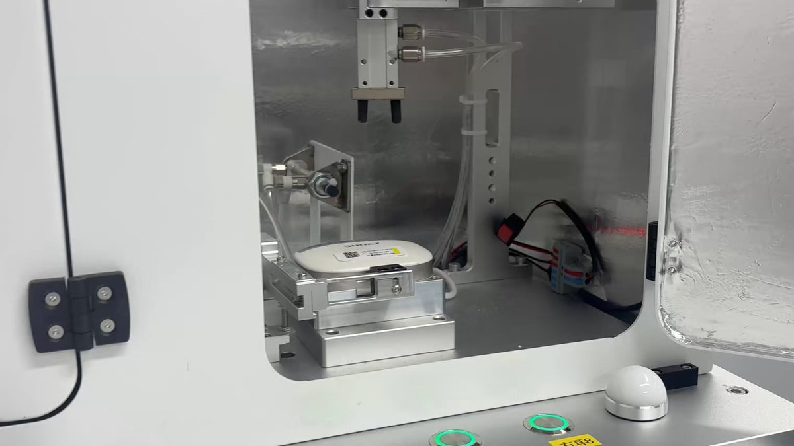
NTTデータG、世界仕様のデータセンター相次ぎ竣工 大手の需要狙う
NTTデータG、世界仕様のデータセンター相次ぎ竣工 大手の需要狙う
トランプ大統領、台湾の頼清徳総統と協議の意向！実現すれば断交以来初に！ #政治
トランプ大統領、台湾の頼清徳総統と協議の意向！実現すれば断交以来初に！ - オレ的ゲーム速報@刃の記事ページ
jin115.com
なるせひろのりさんがリポスト
【ネタバレ】「ザ・ボーイズ」最終回ラストのホームランダー、なぜ◯に◯◯◯◯◯？
https://
theriver.jp/the-boys-final
e-homelander/
…
ついに決着……！あの結末となった背景と伏線
【ネタバレ】「ザ・ボーイズ」最終回ラストのホームランダー、なぜ◯に◯◯◯◯◯？ ─ あの決着となった背景と伏線 | THE RIVER
過去と現代を行き来するミステリーADV「ミステリーの歩き方2 人魚伝説殺人事件」，Switch2/Switch向けに9月発売へ。自由捜査モードを追加
https://
4gamer.net/s/G100862.2605
21006
…
海沿いの街「鎌蔵」を舞台に，20年前に発生した“人魚伝説殺人事件”の解明に挑む
日本の高い社会保険料、低所得の勤労層に重い負担 翁百合氏
https://
nikkei.com/article/DGXZQO
CD0717V0X00C26A5000000/?n_cid=SNSTW005&n_tw=1779322486
…
■高い社会保険料が低所得勤労層の負担に
■世帯類型を問わぬ個人単位の支援制度を
■税・社会保障改革の横断的検討を続けよ
#経済教室 #日経_連載
日本の高い社会保険料、低所得の勤労層に重い負担 翁百合氏
『P3R』とDLCがそれぞれ50%オフ！最新作控える『ACE7』は60%オフ、『Ghostwire: Tokyo』はお得度満点の75%オフ【eショップ・PS Storeのお薦めセール】
https://
gamespark.jp/article/2026/0
5/21/166707.html?utm_source=twitter&utm_medium=social&utm_content=tweet
…
輿水畏子さんがリポスト
“Alles Vergängliche Ist nur ein Gleichnis.”
- 一切短暂之物，都不过是象征 -
— Johann Wolfgang von Goethe, Faust II, Chorus Mysticus
#BanGDream
#AveMujica #豊川祥子
「コーヒートーク トーキョー」本日配信開始。ネオンきらめく東京の街角に佇む小さな喫茶店を舞台にした「コーヒートーク」シリーズ最新作
https://
4gamer.net/s/G083285.2605
21005
…
バリスタとしてカウンターに立ち，人間や妖怪たちとの交流を通じて物語を紡いでいく。アイスドリンクや新SNS機能を追加
日本経済新聞 電子版（日経電子版）さんがリポスト
スペースX、アンソロピックから毎月2000億円受領 計算資源の利用料
スペースX、アンソロピックから毎月2000億円受領 計算資源の利用料
はらみ丼
7月発表？ 30万超え不可避？ サムスン最新折りたたみスマホのスペックリーク
7月発表？ 30万超え不可避？ サムスン最新折りたたみスマホのスペックリーク | ギズモード・ジャパン
ＭＳ＆ＡＤ株価、朝安後上昇 今期純利益4250億円
MS&AD株価、朝安後上昇 今期純利益4250億円
日本国民だけどNASAの宇宙開発の話聞く時だけ勝手にアメリカ国民になってる
キリンが10月に酒類価格改定 ビールは値下げ、酒税改正に対応
キリンが10月に酒類価格改定 ビールは値下げ、酒税改正に対応
これから心臓カテーテルです
メカ搭乗にパルクールもある6v6のFPS『EMPULSE』発表！『タイタンフォール』感？『SPLITGATE』開発元新作がリークからのフライング情報公開
https://
gamespark.jp/article/2026/0
5/21/166706.html?utm_source=twitter&utm_medium=social&utm_content=tweet
…
電源安定化のカーキャパシタで愛車の走りもカーステも変わる。取り付け作業はレンチ1本でOK #BuyPR
電源安定化のカーキャパシタで愛車の走りもカーステも変わる。取り付け作業はレンチ1本でOK | ギズモード・ジャパン
参政党・神谷氏「政治家の帰化歴を公開すべきでは？」→高市首相の回答に失望の声が殺到・・・ #炎上
参政党・神谷氏「政治家の帰化歴を公開すべきでは？」→高市首相の回答に失望の声が殺到・・・ - オレ的ゲーム速報@刃の記事ページ
jin115.com
広島県50年ぶり人口270万人割れ 国勢調査速報
https://
nikkei.com/article/DGXZQO
CC18AF10Y6A510C2000000/?n_cid=SNSTW005&n_tw=1779320101
…
中国地方の5県では前年同時期の推計を1.3％下回る約691万人に。少子高齢化や転出超過で人口減少が止まりません。
広島市では被爆直後の1947年調査以来78年ぶりの減少となりました。
広島県50年ぶり人口270万人割れ、中国5県で5%減 国勢調査速報
ポン☆潤々さんがリポスト
高校生パティシエとコラボした #幸せを運ぶブルーベリーレアチーズ
さっぱりとしたレアチーズムースに、ブルーベリーをトッピング
ザクザク食感の土台と、サンドしたブルーベリーゼリーのつるっとした口あたりが、ひと口ごとに楽しいアクセントに♪
#スイーツ甲子園
#タリーズ
男色ディーノのゲイムヒヒョー ゼロ：第890回「ポケモン言えません」
https://
4gamer.net/s/G004083.2605
19020
…
およそ3か月の冒険を経て，ついに「ドラゴンクエストVII Reimagined」をクリアしたディーノ選手。しかし，ゲイムの道に終わりはないのです。さっそく「ぽこ あ ポケモン」をプレイし始めたそうです
ポン☆潤々さんがリポスト
＼投票終了までラストスパート☆／
サンリオキャラクターへの
温かい応援いつもありがとう！
2026年 #サンリオキャラクター大賞 の
投票締切は5/24（日）だよ！
やり残しがないように、
最後までキャラクターを応援しよう☆
投票サイトはこちら！
https://
sanrio.lnky.jp/KLngg2z
#キャラ大
アナログキースイッチとメカニカルキースイッチを使い分けられるゲーミングキーボード「G512 X」がロジクールGから6月11日発売
https://
4gamer.net/s/G002336.2605
18037
…
9個のTMR式アナログキースイッチが付属し，アナログ入力にしたいキーをユーザーが交換できるのが特徴だ
貝さんさんさんがリポスト
【27卒 採用情報】
/／
背景美術・美術設定職の応募締切は、
5月24日（日）23：59までです！
\＼
ご応募はこちらから
https://
recruit.witstudio.co.jp
皆様のご応募お待ちしております
#27卒 #アニメ #WIT
WIT STUDIO採用サイト
正直に言います 2か月間放置してた・・orz
緩衝材を段ボール製に、梱包費6割減 ナフサ高の打撃緩和へ富山企業
緩衝材を段ボール製に、梱包費6割減 ナフサ高の打撃緩和へ富山企業
Haruhiko Okumuraさんがリポスト
クロスバリデーション下でモデルを統計的に比較した210件の生体医工学AI研究のメタアナリシスにおいて、97%が無効な統計検定を使用していました。
こちらが私たちの新しいプレプリントです
https://
doi.org/10.64898/2026.
05.17.724301
…
@tianchuzeng
@kkli20111
@ZShaoshi
@ten_photos
が主導 1/N
マジでメディアって
「これガチで誰？」
レベルの無名アーティストやら俳優を探してきて
「こんな人が高市政権批判してますよー」
って騒ぐよね
Google、Gemini活用の新広告フォーマットをGoogle検索に導入、「AI Mode」向けの会話型広告も
Google、Gemini活用の新広告フォーマットをGoogle検索に導入、「AI Mode」向けの会話型広告も
佐々木俊尚＠新著「フラット登山 日本を歩く旅60」7月8日刊行！さんがリポスト
おはようございますブランチは、大根のお味噌汁。我が家は具が少ないお味噌汁が好みなのよぉ〜。ちくわの磯辺揚げ。ナスの揚げ浸しは一昨日のだからよく浸かっててうまい #名もなき料理
協力型アクションローグライトゲーム「Deep Rock Galactic: Rogue Core」早期アクセスをSteamで開始。人気採掘ゲームのスピンオフ作品
https://
4gamer.net/s/G099077.2605
21003
…
精鋭部隊「Reclaimers」の一員として採掘惑星「ホクシーズIV」に潜入
エンドスさんがリポスト
がんばって見た。
なごやか、あたたかく、女性の総理をサポートする面々。優しいメンズ。
でも、今の世界と日本の状況とあまりにもかけ離れている、違和感。
元自民党近くの人たちばかりで、お友達会。
これが論戦？議論？違う。
茶番、吐き気。
キオクシアの時価総額、初の30兆円 メモリー需要取り込み急拡大
キオクシアの時価総額、初の30兆円 メモリー需要取り込み急拡大
% exiftool -ver
13.55
yousukezan
@yousukezan
ExifToolに、画像メタデータ経由でmacOS上の任意コマンドを実行できる重大脆弱性CVE-2026-3102が見つかった。写真ファイルへ悪性コードを埋め込むだけで、トロイの木馬展開や情報窃取が可能になる危険がある。
ようやくクリップスタジオでメタリック調にレンダリングする方法が分かった気がする 昨夜何度やってもできなかったのに、今朝、思いついてやってみたらすぐにできて・・・・・睡眠は大切やなぁ
VRoid→Blender→クリップスタジオ
ユービーアイ『ファークライ』『ゴーストリコン』『アサクリ』で次年度以降は巻き返し見込み―戦略的リセットにともなう減収など言及の決算発表
https://
gamespark.jp/article/2026/0
5/21/166705.html?utm_source=twitter&utm_medium=social&utm_content=tweet
…
ユウマボウズさんがリポスト
ヒルバレー
ラ チッタデッラ川崎店からのお知らせ
22日(金) 12時頃にガルクラスタンプツター 缶バッジの再入荷が決定いたしました！！！
前回最後とご案内いたいしたましたがm(__)m
Masanori Kusunoki / 楠 正憲さんがリポスト
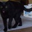
羽田から羽田に帰ってきた JL213 夕方の便に変えた #白浜シンポジウム
Haruhiko Okumuraさんがリポスト
過去にあった長めのやりとりをピックアップする感じでした。ライフログの要約みたいで、たまに聞くと面白いかも。全文開陳すると、以下の通りです。
ーーーーーーーーーーーーーーーーー
湘南ペンギンさんがリポスト
神奈川県警平塚署に侵入容疑で男逮捕 薬品の様な液体まき6人搬送
神奈川県警平塚署に侵入容疑で男逮捕 薬品の様な液体まき6人搬送：朝日新聞
学園アイドルマスター【公式】さんがリポスト
【本日受注締切！】
「学園アイドルマスター」
1/7スケールフィギュア 花海咲季の一般流通店舗の受注〆切は本日5月21日(木)23:59まで！
PLUMのフィギュアは基本受注生産です。確実にお迎えしたい方はご予約がおすすめです
直販限定豪華版もお見逃しなく！
▼直販でのご予約はツリーから▼
Haruhiko Okumuraさんがリポスト
昨年出版された私の以下の論文の remaining case もここ数日 ChatGPT に議論させたところ解けたっぽい。
私が考えているような問題は素朴な問題でさえ解けないと書いてから１ヶ月も経たずに...。
https://
sigma-journal.com/2025/045/sigma
25-045.pdf
…
4月下旬に ChatGPT のバージョンが 5.5
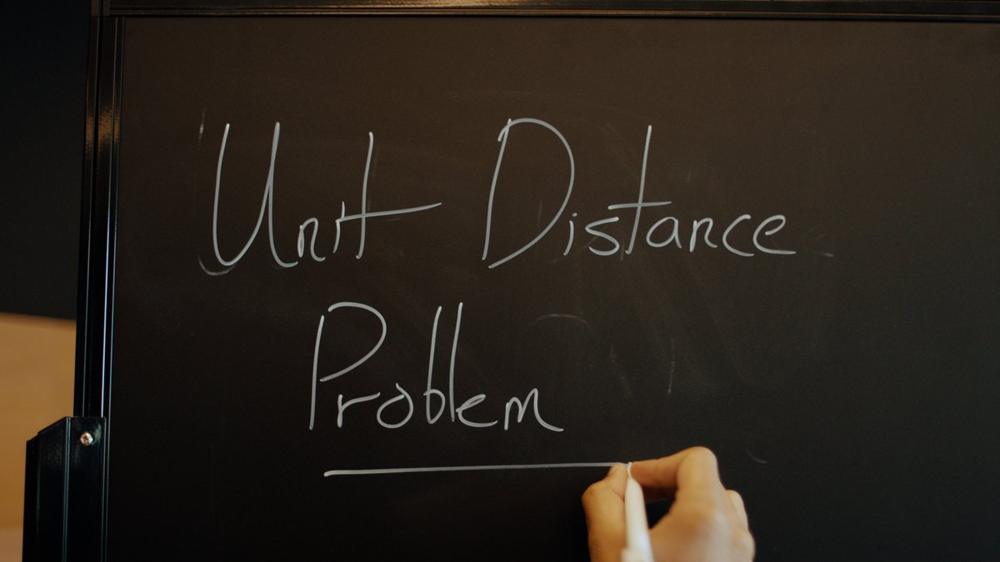
OpenAI
@OpenAI
本日、平面単位距離問題に関する画期的な成果を共有します。これは、1946年にポール・エルデシュが最初に提起した有名な未解決問題です。
ほぼ80年間、数学者たちは、最適な解が概ね正方形グリッドのように見えると信じてきました。
期待しすぎは禁物？ ｢Googlebook｣と｢AluminumOS」。秋には続々と市場に
期待しすぎは禁物？ ｢Googlebook｣と｢AluminumOS」。秋には続々と市場に | ギズモード・ジャパン
富士通、AIが人事異動案を作成 工数を約98％削減
富士通、AIが人事異動案を作成 工数を約98%削減
【無敵の人】トランプ大統領とその親族、永久に○○されない存在になってしまう・・・ #政治
【無敵の人】トランプ大統領とその親族、永久に○○されない存在になってしまう・・・ - オレ的ゲーム速報@刃の記事ページ
jin115.com
学園アイドルマスター【公式】さんがリポスト
✧━━━━━━━━━━✧
全ラインナップ公開
✧━━━━━━━━━━✧
一番くじ 学園アイドルマスター Part5
6月19日(金)より順次発売予定
https://
1kuji.com/products/gkmas
05
…
花海咲季月村手毬藤田ことねの
フィギュアが「1/7 Gracemaster」で登場
#学マス #idolmaster
賞金総額10億円 スクエニがゲーム開発コンテスト 受賞作は世界配信を支援
賞金総額10億円 スクエニがゲーム開発コンテスト 受賞作は世界配信を支援
いるか@心が酒びたっているんださんがリポスト
数万人の絵師が列をなして「わいせつ物を陳列してしまいました」と警察に自首したらどうなるだろうかと考えている
『スト6』イングリッドは、まさに“潜在的宇宙規模美少女”な性能！新モード「アバターランダムマッチ」「アバターアーケード」とあわせて先行体験
https://
gamespark.jp/article/2026/0
5/21/166704.html?utm_source=twitter&utm_medium=social&utm_content=tweet
…
投げも取れる当身がチョベリグなのじゃ！
スタジオコロリドのNetflix映画ね、まあまた俺たちだけがひっそり愛して終わろうかなと予告が出てすぐにチェックしてたらなんか変なオタクにドンドン取り込まれて萎える、そういうこともある。
エンドスさんがリポスト
こんなの国会じゃない。
子どもたちの学級会でももっと真面目にやってるだろう。
党首討論って以前はもっと緊迫感あったはず。
しかも今の日本には喫緊の問題が山積してるというのに何故こんなにわちゃわちゃできるのか。
こんなわちゃわちゃに税金どれだけ使われてるのか考えたら怒りしかない。
電池不要でセンサーが動く！体温を電源にできる技術を実証
電池不要でセンサーが動く！体温を電源にできる技術を実証 | ギズモード・ジャパン
気持ち良すぎる切り心地。1mm単位でスライスできて指を切るリスクも低減されたフランス発のナイフ #BuyPR
気持ち良すぎる切り心地。1mm単位でスライスできて指を切るリスクも低減されたフランス発のナイフ | ギズモード・ジャパン
デスクの上が広くなる昇降デスク、あるって知ってた？
デスクの上が広くなる昇降デスク、あるって知ってた？ | ギズモード・ジャパン
［プレイレポ］ヨッシーが図鑑の世界でフィールドワーク？ 「ヨッシーとフカシギの図鑑」で，たくさんの生きものを見つけて，調べて，記録しよう
https://
4gamer.net/s/G094530.2605
18001
…
この子はもっちりフラワーと名付けました。なぜならもっちりでかわいいから！ 発見と調査，図鑑を眺めるのが楽しいゲーム
メモリをオンにしている方はこういう質問にどう返事が来ますか？
日経平均株価が6万円回復、一時1900円超高 ソフトバンクG急伸
日経平均株価が6万円回復、一時1900円超高 ソフトバンクG急伸
Masanori Kusunoki / 楠 正憲さんがリポスト
ダイバード…
#白浜シンポジウム
経理担当「推し活の資金欲しいな、せや！」→ヤバすぎることに手を染め無事逮捕へ #酷い話・事件
経理担当「推し活の資金欲しいな、せや！」→ヤバすぎることに手を染め無事逮捕へ - オレ的ゲーム速報@刃の記事ページ
jin115.com
オフィスの「上限温度」設定を提唱 イギリス政府の助言機関、温暖化による熱波警戒
https://
nikkei.com/article/DGXZQO
UB20CUD0Q6A520C2000000/?n_cid=SNSTW005&n_tw=1779319908
…
北海道よりも高緯度のイギリスでは冷房設備が入っていない建物も多く、導入を訴えました。
ヨーロッパではスペインが先行して、オフィス内の上限温度を27度と定めています。
オフィスの「上限温度」設定を提唱 英政府の助言機関、夏の高温警戒
【#ヘブバン 4.5thフェス 会場観覧チケット2次受付中！】
31Aキャストが勢揃いして4.5周年の新情報を解禁
さらにShe is LegendによるSPミニライブも！
現地で盛りあがろう！
5月24日(日)23:59まで
2026年8月2日(日) 18時~
ヒューリックホール東京
▼詳細
https://
eplus.jp/sf/event/heave
n-burns-red-4-half
…
海賊都市建設シム「Corsair Cove（コルセア・コーヴ）」の先行プレイ配信を本日12：00にスタートします
https://
4gamer.net/s/G100030.2605
20023
…
海賊の黄金時代を再び夢見て海賊旗を掲げよ！ 本日12：00からTwitchにて配信開始
深圳にあるShokzのラボに潜入。
なんかずっと見ていられるイヤホンの耐久性テスト。5000〜1万回まで延々と繰り返すのだとか
もはやデフレではない
もはやデフレではない
地下アイドル・森なづなさん デビューしてすぐにカラオケ下着動画が流出「正直、今後どのような暴露や過去の出来事が出てくるのか、自分自身でも分からない部分があります」
地下アイドル・森なづなさん デビューしてすぐにカラオケ下着動画が流出「正直、今後どのような暴露や過去の出来事が出てくるのか、自分自身でも分からない部分があります」 : ハムスター速報
湘南ペンギンさんがリポスト
【速報】警察署で液体まいた男逮捕、硫化水素発生か
【速報】警察署で液体まいた男逮捕、硫化水素発生か
北辰ファン多すぎる
劇場版ナデシコのセル画、ブラックサレナに潰される北辰が27万越えで落札されててお腹痛い
AI関係のアプリの一部は英語環境で使っている
貝さんさんさんがリポスト
勢いのある大手スタジオを訪問すると、オフィスの綺麗さとスタッフの若さが際立つ。
しかもなぜアニメ業界に？と思うような優秀な制作があちこちに居るし、プロデューサー含めたスタッフも若くて有能。
この格差を前に中堅以下のスタジオがどう太刀打ちするのか…と軽い絶望を覚える。
薄さに惚れて収納ケースに恋した。Xiaomiのスマート扇風機「Mijia Pro Slim」が隙なさすぎる
薄さに惚れて収納ケースに恋した。Xiaomiのスマート扇風機「Mijia Pro Slim」が隙なさすぎる | ギズモード・ジャパン
2022年に噴火した海底火山、大気汚染を自分で掃除していた
2022年に噴火した海底火山、大気汚染を自分で掃除していた | ギズモード・ジャパン
男性パートナーと結婚してるベッセント財務長官に、肘を付いて上目遣いに微笑み、手を顎に当て、色目を使う高市早苗首相(65)。
その手が通じない相手と、誰か教えてあげれば良いのに。。。
Masanori Kusunoki / 楠 正憲さんがリポスト
これ影響めっちゃでるんじゃないかって心配してます
@shirahama_sympo
#白浜シンポジウム #sccs2026
VS CodeからMarkdown Preview Enhancedを消したけれど本体だけでプレビューできてる
watany
@_watany
これホンマにそう。何でmarkdownちょっと使うだけでサードパーティ入れないといけないんだ x.com/muo_jp/status/…
教師「学校への携帯電話持ち込みは校則違反だから没収！1ヶ月預かるからな！」→生徒が警察に被害届を出した結果ｗｗｗｗｗｗ #雑談・その他の話
教師「学校への携帯電話持ち込みは校則違反だから没収！1ヶ月預かるからな！」→生徒が警察に被害届を出した結果ｗｗｗｗｗｗ - オレ的ゲーム速報@刃の記事ページ
jin115.com
でなー
使っていません。予定もありませんが、気が向けば使うかもしれません。
#mond_ockeghem
徳丸 浩さんが質問に回答しました | mond
NVIDIA、売上高は過去最高の816億ドル、純利益は3倍超に──AI投資「持続する」とフアンCEO
NVIDIA、売上高は過去最高の816億ドル、純利益は3倍超に──AI投資「持続する」とフアンCEO
4月は貿易黒字3019億円 中東からの原油輸入量は67%減
4月は貿易黒字3019億円 中東からの原油輸入量は67%減
機械受注の1〜3月6.4％増、2四半期連続プラス 3月単月は9.4%減
機械受注の1〜3月6.4%増、2四半期連続プラス 3月単月は9.4%減
エンドスさんがリポスト
しかも厄介なのは、
敏感な人ほど、
こういう“あざとい政治パフォーマンス”を見たくなくなること。
だから距離を置く。
でも、
見ない人が増えるほど、
真正面から批判する人も減る。
すると、ますます増長する。
完全に悪循環なんだよね。
正直、私も高市さんを見たくない。
日経平均株価反発で始まる 上げ幅1200円、米株高で買い先行
日経平均株価反発で始まる 上げ幅1200円、米株高で買い先行
エンドスさんがリポスト
党首討論の空気、
かなり異常じゃない？
メディアの報じ方まで含めて、
完全に“高市上げ”を補強する方向に見える。
高市「結局二日酔い」
玉木氏に
「やさしくね」
中道の小川氏にいたっては、
K&M&Y&A
@uchu1dane
本人は二日酔いを自慢して、野党は高市早苗の作り笑顔を絶賛して始まった和気あいあいの野党6党首との形だけの党首討論
これを『大政翼賛会』と呼ぶ
出られなかった共産党 れいわ 社民が国会に必要で党主討論にも必須だと思う大きな理由の一つになった。
確かにあのあとソルジャーボーイはどうなったのか気になっていたんだよなぁ。あのまま冷凍睡眠か、それとも能力を消されて人に戻ったのか。
Wong Updates
@WongUpdates
エリック・クリプキが、「THE BOYS」のフィナーレ後の出来事をソルジャー・ボーイの視点から描いた秘密のエピソードがあることを明かした。
5月27日にPrime Videoで公開。
(via:
https://
hollywoodreporter.com/tv/tv-news/the
-boys-season-5-prime-video-ratings-record-1236598788/
…)
３４歳婚活女子として世間を震撼させている中野綾香さん またやらかしてしまう
３４歳婚活女子として世間を震撼させている中野綾香さん またやらかしてしまう : ハムスター速報
改めて感じるパソコン処理速度の重要性。メインPCを切り換えてから更新がかなり楽になった。というかストレスが減った。今までは操作に対してレスポンスに数テンポの遅れがあった。特にDreamweaver。それが無いだけでこうも作業効率が変わるとは･･･。(;´Д｀)
PCやガジェット、アウトドア用品でリュックが激重な人は必見。後付けサスで肩がラクになるよ #BuyPR
PCやガジェット、アウトドア用品でリュックが激重な人は必見。後付けサスで肩がラクになるよ | ギズモード・ジャパン
栃木・強盗殺人事件、実行役の少年が◯◯していたという新情報が判明→同情の声が消え去り「死刑」を望む声が圧倒的多数に #酷い話・事件
栃木・強盗殺人事件、実行役の少年が◯◯していたという新情報が判明→同情の声が消え去り「死刑」を望む声が圧倒的多数に - オレ的ゲーム速報@刃の記事ページ
jin115.com
米イーライ・リリー幹部ジョンソン氏「新薬発売には適切な薬価必要」
米イーライ・リリー幹部ジョンソン氏「新薬発売には適切な薬価必要」
｢青山学院・関西学院と並ぶ存在に｣ 名古屋学院大学、金城と統合でブランド向上
https://
nikkei.com/article/DGXZQO
FD149UO0U6A510C2000000/?n_cid=SNSTW005&n_tw=1779285196
…
金城学院大学は入学者数が定員を下回る状況が続いていました。ただ名古屋では金城のブランド力は強く、名古屋学院大学はプラスと判断しました。
｢青山学院・関西学院と並ぶ存在に｣ 名古屋学院大学、金城と統合でブランド向上
ファンド融資、目立つ収益悪化 「プロ投資家」から絶えぬ人気
ファンド融資、目立つ収益悪化 「プロ投資家」から絶えぬ人気
スマホゲームのセルラン分析（2026年5月7日〜5月13日）。今週の1位は「ラストウォー：サバイバル」。1月〜3月に登場した新作の国内ランキングも
https://
4gamer.net/s/G079368.2605
18002
…
「ONE PIECE トレジャークルーズ」は12周年記念の超スゴフェス，「ブレイクマイケース」は2周年記念イベントで収益を伸ばした
日本経済新聞 電子版（日経電子版）さんがリポスト
アンソロピック、4〜6月に初の「営業黒字」見通し AI売上高3カ月で倍増
アンソロピック、4〜6月に初の「営業黒字」見通し AI売上高3カ月で倍増
Gyre Therapeutics による科学カンファレンス発表資料に関するお知らせ
https://
ssl4.eir-parts.net/doc/2160/tdnet
/2819456/00.pdf
…
これもウェアラブルの未来。カメラ搭載ヘアクリップが開発中。
これもウェアラブルの未来。カメラ搭載ヘアクリップが開発中 | ギズモード・ジャパン
オタク起床
日本経済新聞 電子版（日経電子版）さんがリポスト
「義父母の介護・扶養はイヤ」 死後離婚、年3600件に再増加のワケ
「義父母の介護・扶養はイヤ」 死後離婚、年3600件に再増加のワケ
元フジテレビアナ・渡邊渚さん「『世界中に平和と繁栄をもたらせるのはドナルドだけ』と言えてしまう首相が、真に平和をもたらせるとは思えない」 #政治
元フジテレビアナ・渡邊渚さん「『世界中に平和と繁栄をもたらせるのはドナルドだけ』と言えてしまう首相が、真に平和をもたらせるとは思えない」 - オレ的ゲーム速報@刃の記事ページ
jin115.com
ちなみに今から約3年前には、ドリキャス版 「デイトナUSA2001」もネット対戦がプレイ可能になっているので、あの楽しかった青春時代をもう一度…みたいな方は、要チェックかもね。
https://
segabits.com/blog/2023/07/1
4/daytona-usa-2001-online-multiplayer-restored-thanks-to-dreamcast-live/
…
トランプ氏「我々の式典の方が豪華だった」 中ロ首脳会談に言及
https://
nikkei.com/article/DGXZQO
GN20CVE0Q6A520C2000000/?n_cid=SNSTW005&n_tw=1779317796
…
自身と習近平氏との会談の方が「勝っていた」と述べ、習氏とは特別な関係にあると強調しました。
中ロ首脳会談はトランプ氏と習氏が北京で会談した5日後に開催されました。
トランプ氏「我々の式典の方が豪華だった」 中ロ首脳会談に言及
輿水畏子さんがリポスト
智と仁菜とすばる
ドリームキャストで発売されてた、ハドソンのオンラインゲーム『ルーンジェイド』が、25年ぶりにオンラインプレイが可能に!!
ここ数年、ドリキャスは別途機器を用意する事により、過去にオンラインプレイが提供されていた様々なゲームが当時と同様にプレイ可能になっている
https://
segabits.com/blog/2026/05/1
2/rune-jade-is-brought-back-online-thanks-to-dreamcast-live/#more-85902
…
【聖地巡礼】anemoi / key in 小平町 編
https://
youtu.be/nnBZDPK1c9w?si
=Fw-AuSK_wNreHDiy
…
@YouTube
より
anemoi / key 重要文化財 旧花田家番屋です。2026年5月16日撮影#anemoi#アネモイ#旧花田家番屋...
youtube.com
不発弾処理でゆいレール止めるのって、ここ７から８年だと３回目ぐらいかな。前回は那覇市立病院の工事現場、その前が赤嶺駅の近くだったような。 #アップ738
Torishima / INTPさんがリポスト
250$＞200$になるって言ってんのに
日本では36400円から32000円？
言葉選ばないけど普通に詐欺られてる気分
味変って大事。4年で2台買うほど愛していたキーボードから「Keychron K8 Pro」にリニューアル
味変って大事。4年で2台買うほど愛していたキーボードから「Keychron K8 Pro」にリニューアル | ギズモード・ジャパン
高校の論理国語と文学国語について | 佐々木俊尚「毎朝の思考」/ Voicy - 音声プラットフォーム
高校の論理国語と文学国語について | 佐々木俊尚「毎朝の思考」/ Voicy - 音声プラットフォーム
高校の国語の授業で文学についての比重を増やすという文科省の方針についてVoicyで考えました。文学だけになってしまうと「お気持ち主義」に陥る危険もあり、まず論理を徹底的に構築できる能力が先にあるべき。↓
日本経済新聞 電子版（日経電子版）さんがリポスト
持ち家、今買って家計にプラスか 家賃から「公式」で試算
持ち家、今買って家計にプラスか 家賃から「公式」で試算
読書について、とても良い文章。「私は一冊の本の著者の世界観と一体化するのが好きだ。著者の思考をたどり、自分も迷い、「わからない」を加速させていく。そこに流れるのは静かな思考の時間だ。答えなんて、わかってもわからなくてもいい」↓
わかってるからじゃない、わからないから、書くんだ - 『「わからない」という方法』橋本治｜Ryoko Tomura（戸村涼子）
わかってるからじゃない、わからないから、書くんだ - 『「わからない」という方法』橋本治｜Ryoko Tomura（戸村涼子）
ウチの窓の下によくいる野良猫、おなか減ってる時に人が通るとニャーニャー鳴いてうるさいんだけど、考えたら窓から泥棒が入ろうとしても、ニャーニャー鳴かれた瞬間に「気づかれた！」って逃げてくだろうから、良い警備システムかもしれない。セコムならぬネコム。
Gentle Monster と Warby Parker デザインの Google系スマート・オーディオ・グラス
グラスで撮った写真をウォッチの画面で確認できる機能が便利そう
今年も実物は拝めなかったけど、ディスプレイ付きデモ機の体験は進化していました
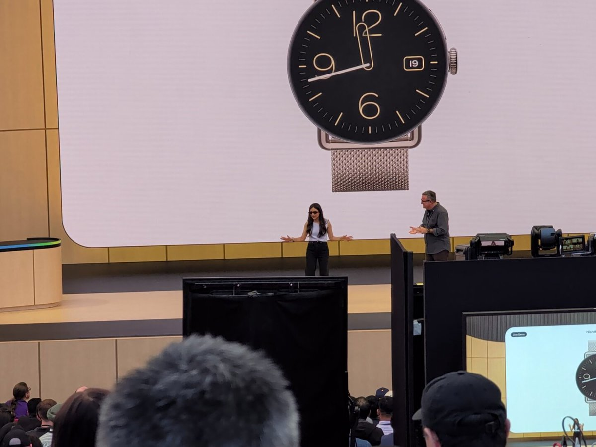
ついに完全養殖のウナギが一般販売。一尾5000円とまだ高価だけど、「新しいタイプの水槽を使うなどしてシラスウナギ1匹あたりのコストを天然のものと比べて3倍から4倍程度まで抑えられるようになってきた」。いずれ絶滅を気にせず食せるようになるかな。↓
「完全養殖」ウナギのかば焼き 初めて一般向け販売へ | NHKニュース
「完全養殖」ウナギのかば焼き 初めて一般向け販売へ | NHKニュース
売れるためなら悪魔に魂を捧げるか？というテーマを軸にした音楽漫画。承認欲求とセルフケアの狭間も考えさせられる、素敵な作品でした。↓
クロスロード／26年3月期JUMP新世界漫画賞／週刊少年ジャンプ - 上宮宜之介 | 少年ジャンプ＋
クロスロード／26年3月期JUMP新世界漫画賞／週刊少年ジャンプ - 上宮宜之助 | 少年ジャンプ＋
内向きな日本のインテリジェンス…時代はテロから国家間競争へ、国家情報会議法案をめぐって山積する課題
内向きな日本のインテリジェンス…時代はテロから国家間競争へ、国家情報会議法案をめぐって山積する課題
内調を改組して新設される国家情報局は警察中心の陣容になると見られているが、これまで公安警察は国内の治安対策が中心だった。つまり国民の監視追跡をやってきたわけで、これが日本では情報機関へのイメージ悪くしてる一助にもなってると思う。そして警察はこれを対外情報中心に変えていくことができ
ハルメク、「推し」で出版不況吹き飛ばす シニア広告塔が読者つなぐ
ハルメク、「推し」で出版不況吹き飛ばす シニア広告塔が読者つなぐ
そんなこと聞いてどうするのですか?
#mond_ockeghem
徳丸 浩さんが質問に回答しました | mond
Polar Starチャレンジ 144日目午前の部
マイネームイズ
@MyNameIs_smrn
Polar Starチャレンジ 143日目午後の部 x.com/mynameis_smrn/…
Polar Starチャレンジ 143日目午後の部
マイネームイズ
@MyNameIs_smrn
Polar Starチャレンジ 143日目午前の部 x.com/mynameis_smrn/…
理系の人材武装で高専の卒業生に熱い視線。三菱UFJが率先して今年から採用を開始。なるほど＞「15歳で高専に入学して専攻科を卒業するには7年かかるので、年齢は大卒と同じということになる。しかし大卒の場合、高校での3年間と大学の教養課程という専門分野とは直接関係のない勉強に時間をとられるこ
三菱UFJ銀｢高専卒業生｣の採用を開始､産業界から熱視線の"高専"に自治体も前のめり､ただ｢新設計画｣はやや弱腰の訳
三菱UFJ銀｢高専卒業生｣の採用を開始､産業界から熱視線の"高専"に自治体も前のめり､ただ｢新設計画｣はやや弱腰の訳
Polar Starチャレンジ 143日目午前の部
マイネームイズ
@MyNameIs_smrn
Polar Starチャレンジ 142日目午後の部 x.com/mynameis_smrn/…
一人暮らしのひとがどうやって正気を保っているのかわからない これは基本労働で人と会ったりをあまりしないからかもだが・・・
Torishima / INTP
@izutorishima
最近鬱モード気味でだな・・・
クマ撃退の新兵器登場。学校などに設置されてる侵入者撃退のサスマタですね。さすがにこれを持って登山するのは面倒なので、トレッキングポールを常時携帯するようにしようかなあ。「振り上げた時に距離を詰められないよう、たたかずに突くこと」「クマにつかまれないように、突いた後はすぐに引くこと
クマに襲われ木の棒で命拾いした男性、開発した「クマ撃退用ポール」に注文殺到…青森県警も導入
クマに襲われ木の棒で命拾いした男性、開発した「クマ撃退用ポール」に注文殺到…青森県警も導入
最近鬱モード気味でだな・・・
トクリュウに若者を誘い込む際、こういう感情誘導もあるらしい。「“仕事”に向かう移動中、指示役から「闇金の集金日を狙う」「暴力団から流れた金だ」と説明を受けた」「自分は、今までの生活や生きてきた環境で悪いことをするときの判断基準は『被害届がでるかでないか』という基準でした」「つまり、
服役中の元少年が明かす“闇バイト”の心理「被害者の痛みが想像できない」 - 弁護士ドットコムニュース
服役中の元少年が明かす“闇バイト”の心理「被害者の痛みが想像できない」 - 弁護士ドットコムニュース
手のひらサイズで超強力な噴射力。ジェントスのブロワーは使いやすさ抜群！ #BuyPR
手のひらサイズで超強力な噴射力。ジェントスのブロワーは使いやすさ抜群！ | ギズモード・ジャパン
AI時代にホワイトカラーからブルーカラーへの回帰という流れだけど、こういうパターンも。RIZAPが建設業に本格参入。「今年度中にグループのホワイトカラー人材最大500人をブルーカラー人材へ転向させることを目標に掲げていて、すでに50人ほどの異動が決まった」↓
RIZAP 最大500人をブルーカラー転向へ 建設業に参入
RIZAP 最大500人をブルーカラー転向へ 建設業に参入
跳ねなくなったIPO 「新興株よりキオクシア」
https://
nikkei.com/article/DGXZQO
UB14B7W0U6A510C2000000/?n_cid=SNSTW005&n_tw=1779281013
…
個人投資家の、IPO市場への関心が薄れています。新規上場数が減り、流動性が薄くなったためです。代わりに今、注目を集めているのが「激しく動く」大型株です。
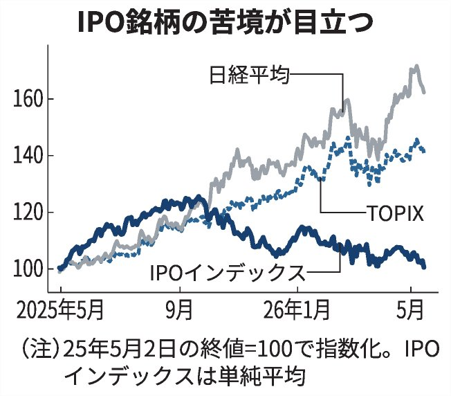
1977年に当時20歳代の男性が行方不明に → 49年後、とんでもない真相が判明 #雑談・その他の話
1977年に当時20歳代の男性が行方不明に → 49年後、とんでもない真相が判明 - オレ的ゲーム速報@刃の記事ページ
jin115.com
［プレイレポ］「ストリートファイター6」イングリッドを先行体験。豊富な飛び道具と奇襲技を特徴とするトリッキーなキャラクター
https://
4gamer.net/s/G063504.2605
21001
…
イングリッドの先行動画も公開。5月28日のアップデートでは，アバターを使った新たな遊びも
［プレイレポ］「ストリートファイター6」イングリッドを先行体験。豊富な飛び道具と奇襲技を特徴とするトリッキーなキャラクター
おはようございます。
「大戦略SSB2」，新兵器「こんごう型護衛艦ちょうかい（巡航ミサイル装備）」を追加。DLC第4弾「フランス」も5月28日配信
https://
4gamer.net/s/G094686.2605
20054
…
中国・オーストラリア衝突や中印危機を描く新シナリオ2本も追加
サイダー、水あめ、ゼラチンで作れます
食べられる“透明なパンケーキ”が86万再生 脳がバグる光景に「すっご！！？」「どんな味なんだろう」
（記事URLはリプから）
食べられる“透明なパンケーキ”が86万再生 脳がバグる光景に「すっご！！？」「どんな味なんだろう」（1/3） | ライフスタイル ねとらぼ
「AIはアートを作るためではなく，クリエイターのポテンシャルを開放するために」 カプコンがAIで取り組む「ゲーム開発の重さ」という課題
https://
4gamer.net/s/G999101.2605
19017
…
人間では3000〜5000時間かかるフィールドのビジュアル検証作業が，AIなら約72時間で済むというから効果は絶大だ
ふぇむ(せかんど！)さんがリポスト
#ニキビの日
ポン☆潤々さんがリポスト
SHINEシャインマスカット キャンペーン
シャインマスカット ゼリー＆アロエで
果実のようなごろっと食感が楽しめる
毎日名様に
『SHINEシャインマスカット』の
ドリンクTicketを
フォロー&リポストで応募
※当選者のみDMで自動送信
※この投稿は5/22 7:59まで
極めて重大なSQLインジェクション脆弱性だが、PostgreSQLを使用しているサイトのみに影響するとのこと / “Drupal core - Highly critical - SQL injection - SA-CORE-2026-004”
Drupal core - Highly critical - SQL injection - SA-CORE-2026-004
drupal.org
DoomをプレイできるOSをイチから書くのにわずか12時間、費用16万円くらい。
メインのAIが93のサブAIを指揮して実現してしまった。
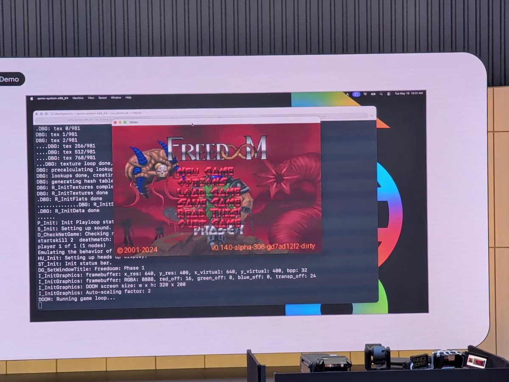
本作は海外フォーラムのあちらこちらで「SteamDeckで遊ぶのに最高のゲームの一本」と絶賛されていたので試してみたけれども、歳のせいかジョーカーカードの効果を暗記できず、匙を投げたという経緯がある。
中毒性も高いと言われているけれども、ルールが理解できないとなるとさっぱり(同じ理由でSlay
なるせひろのりさんがリポスト
おはようございます
金利上昇で低調の環境債、EV電池などに対象拡大 6月にも指針改定
金利上昇で低調の環境債、EV電池などに対象拡大 6月にも指針改定
日経平均株価、米株高が追い風（先読み株式相場）
日経平均株価、米株高が追い風（先読み株式相場）
栃木の強盗殺人 実行役の少年らは被害者の飼い犬も殺害したか #ldnews
https://
news.livedoor.com/article/detail
/31326644/
… ほんと最悪事件だ。少年らは極刑でいいよ。
【独自】栃木強盗殺人 実行役の少年ら被害者の犬も殺したか 吠えられるのを警戒し侵入直後に 動物愛護法違反容疑でも追及へ
なるせひろのりさんがリポスト
Paypalが、成人向け作品のコミッション支払いを受け取るクリエイターに対して、永久的なアカウント制限等の実施を行っているという報告が増えています。昨日は、Kickstarterに対して決済プロセッサーであるStripeが規制強化を要請していたことが明らかにされましたが、これら金融検閲の流れは今なお世
Grummz
@Grummz
Paypal が COMISSIONS を SHUTTING DOWN しています。
もう露骨な commissions はできません。複数のアーティストがこのような通知を受け取ったという報告があります。
これは、Kickstarter が Stripe も露骨な Kickstarter をシャットダウンすると発表した直後です。
彼らのコントロール外です。
さしずめたい
#鷹原羽依里生誕祭
#鷹原羽依里生誕祭2026
SpaceXがIPO申請 イーロン・マスクCEOが議決権の85.1％掌握へ
SpaceXがIPO申請 イーロン・マスクCEOが議決権の85.1％掌握へ
作成時と更新時で対応が違ったというコメントもいただきました。時期的なものかもしれませんね。「直近の作成時または更新時」とすれば曖昧さがなかったですね
いつまで持つかなは草。＞RP
KIRIMIちゃん.に投票したよ☆
がんばるみんなにエールを！Smiling Ovation!
#サンリオキャラクター大賞 #キャラ大
KIRIMIちゃん.に投票したよ | 2026年サンリオキャラクター大賞 公式サイト
ギズモード・ジャパン（公式）さんがリポスト
JBL Bandbox SoloにBRAVOしました #ギズモードレビュー
JBL Bandbox Solo、本命となるAIスピーカーはこれだった | ギズモード・ジャパン
シャープ、おしゃべりAIロボ「ポケとも」を台湾で発売
https://
nikkei.com/article/DGXZQO
UF2090B0Q6A520C2000000/?n_cid=SNSTW005&n_tw=1779284784
…
手のひらにのるサイズのロボとスマホ用アプリを展開。中国語で対話を楽しむことができます。ロボは虹色に光るおなかのランプで感情を表現します。
シャープ、おしゃべりAIロボ「ポケとも」を台湾で発売 初の海外展開
NVIDIA最高益、5〜7月は9割増収
https://
nikkei.com/article/DGXZQO
GN160GB0W6A510C2000000/?n_cid=SNSTW005&n_tw=1779314959
…
AI半導体が好調で市場予想を上回りました。
ファンCEOは「世界にはいずれ数十億ものAIエージェントが存在するようになる」と発言。ただ、中国向けの販売は停滞しています。
決算:NVIDIA最高益、ファンCEO｢世界にいずれ数十億のAIエージェント｣
ローグライト・アクションMMORPG『Soulbound』Steam版が発表―仲間と広大な仮想世界でダンジョンに挑戦
https://
gamespark.jp/article/2026/0
5/21/166703.html?utm_source=twitter&utm_medium=social&utm_content=tweet
…
ほんとそれ。沖縄の基地をなくしたいなら習近平に台湾と尖閣は諦めろと言ってこいと思う。
soLa
@kokkara2023
沖縄と日本を分断しようとしてる連中ってなんだろうね。そんなに日本が嫌なら出て行けばいいのに。
自分は東京から石垣島に来た。
理由はめんどくさいからもう書かない。
東京から石垣島へ移り住み、毎日を過ごす中で心から実感するのは、ここは紛れもなく日本だということ。
老害、まさに的確な言葉だなと。変わってしまう前の世界観で、変わってしまった今の世界を見て、今の世界で笑う楽しそうな人たちに、明日は？と勝手な心配を投影して、陰鬱に浸る。
まさに、老害。
人力の飛脚しか存在しない世界が、あっという間に、東名高速道路とトラックがある世界に変わったですね。
コードを書くよりも、レビューや責任をとることをaiに任せないと、人が進歩のボトルネックになっている。
無人化すべき…
及川卓也 / Takuya Oikawa
@takoratta
はてなブログに投稿しました
Disruptする側、される側 — Google I/O 2026 初日に思ったこと - Nothing ventured, nothing gained.
https://
takoratta.hatenablog.com/entry/2026/05/
20/142648
…
#はてなブログ #生成AI #Google
株高＆原油安
トランプ氏がイラン交渉は「最終段階」などと話したことからNY原油は100ドルを下回り、株価も上昇しました。さきほど発表のNVIDIA決算は売上高・利益とも市場予想を上回りましたが、時間外の株価は1-2%下落しています
note【朝メモ】
https://
note.com/goto_finance/n
/ne76f25fa4d51
…
後藤達也
@goto_finance
NVIDIA決算
・市場予想を上回る（売上高・利益とも）
・5-7月見通しも市場予想上回る
・半導体Blackwellが好調
→ AI投資の増加を映す
・株価は時間外でほぼ横ばい
…いまのところ強い株高材料にならず
・このあと決算説明会
夜勤を終えて帰宅中
今日は休みで、12時に歯医者の定期健診を受けるので、家帰ったらそれまで仮眠
ついでに散髪しに行こうかな。
夜は実家で夕飯食べる予定なので、のんびり過ごします。
徳丸 浩さんがリポスト
Drupal CMS（インターネット上のウェブサイトの約100分の1を支えています）が、つい先ほどリリースしました。SQLインジェクションの脆弱性を修正するための「重大」な脆弱性パッチではなく、「非常に重大」なパッチです。
この脆弱性は、PostgreSQLを使用しているサイトにのみ影響します。
ID:
キリンが10月に酒類価格改定 ビールは値下げ、酒税改正に対応
キリンが10月に酒類価格改定 ビールは値下げ、酒税改正に対応
やんごとなきセンチュリーだ。トラックに積むとか専用の20ftのコンテナに載せて運ぶとかではないんだ。
おしけん
@oshikenhalnatsu
こ、このクルマは…
とりしま (Sub I/O)さんがリポスト
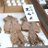
いろかぐ
秋田のレジェンドともいわれる木内にもエスカレーターガールがいたという。＞RP
日本経済新聞 電子版（日経電子版）さんがリポスト
現金給付は所得で線引き、「年収の壁」への対応念頭 現役世代を支援
現金給付は所得で線引き、「年収の壁」への対応念頭 現役世代を支援
AIが代わりに調べてくれる時代？ ググレカスからググってもカスみたいになってるところはあるのは否定しないが、AIがカスだったらどうなるんだ？ #アップ738
お掃除ロボのNarwalから新モデル「Freo Z10 Turbo」中価格帯もプレミア機能が嬉しい
お掃除ロボのNarwalから新モデル「Freo Z10 Turbo」中価格帯もプレミア機能が嬉しい | ギズモード・ジャパン
Steamで人気のローグライクなカードゲーム「Balatro」が、名機「PSP」に勝手移植!!
本作はリリース以来、定期的にバージョンあっぷを繰り返し、本日リリースされたv.0.8で、かなりオリジナルに近いレベルになったので、紹介させて頂く次第だぞッッ!!
https://
github.com/Luxotick/pspal
atro/releases/tag/v0.8
…
▼荒れている経緯
滝沢ガレソ
@tkzwgrs
【再燃】不同意性交容疑で逮捕されるも示談解決してサッカー日本代表入りした #佐野海舟 選手が記者会見実施
↓
佐野選手「日本のサッカーのためプレーと行動で示したい」
森保監督「ミスを犯しただけで選手を葬り去るべきではない」
↓
代表復帰賛成派＆反対派の論争が激化(今ここ)
#本日のツイ議論
【悲報】サッカー日本代表 森保監督をCMに起用したGoogleさん、リプ欄がこの世の終わりみたいなリプライで埋め尽くされる
Google Japan
@googlejapan
今、日本で最も熱い人、森保一さんが Team Pixel に！
Google Pixel にどんな景色を残してくれているでしょうか？ x.com/50791157/statu…
旧国名は豊後なのに「りゅうきゅう」や「ひゅうが」を郷土料理として持つ謎の地域
【異常】またまたまたまた寺社が全焼 ガチで何が起きてるの？？？？？？？？？ #酷い話・事件
【異常】またまたまたまた寺社が全焼 ガチで何が起きてるの？？？？？？？？？ - オレ的ゲーム速報@刃の記事ページ
jin115.com
なるせひろのりさんがリポスト
軽トラのおじさん来店。
おじさん
「ライトわっちまった」
見ると、
ヘッドライトがパックリ。
LEDユニット交換案件。
部品検索。
見積作成。
整備士
「部品代が74000円ほどになります」
おじさん
「はぁ！？」
店内に響く声。
おじさん
「ヘッドライトだぞ！？」
整備士
日焼け止め商品、3年で1割高 男性も「肌ケア意識」
https://
nikkei.com/article/DGXZQO
UB119FQ0R10C26A5000000/?n_cid=SNSTW005&n_tw=1779283315
…
「使わずに外出するなんてありえない」。そう語る50代男性は、2年ほど前から日焼け止めクリームを愛用しています。
ユーザー層の広がりと価格上昇の関係に迫りました。
日焼け止め商品、3年で1割高 外出増え中高年男性も「肌ケア意識」
本物のメッセージボトル！
海辺で何気なく拾った瓶→開けたら…… まさかの中身に「子どものころ憧れたやつやん」「私も海岸に行ってみます」
（記事URLはリプから）
海辺で何気なく拾った瓶→開けたら…… まさかの中身に「子どものころ憧れたやつやん」「私も海岸に行ってみます」 | ライフスタイル ねとらぼ
AIに支配された世界で怪しい仕事を引き受けていくアクションRPG「RoadOut」（ほぼ日 インディーPick Up！）
https://
4gamer.net/s/G066007.2605
17002
…
車でブッ飛ばす爽快さと，ダンジョンをコツコツ進める楽しさを，ひとつのゲームに詰め込んだ作品だ。
「DOOM」「PRAGMATA」「HALO」…「XBOX」公式X改名で大文字アピールが流行る
https://
gamespark.jp/article/2026/0
5/21/166702.html?utm_source=twitter&utm_medium=social&utm_content=tweet
…
ナフサ生成物のエチレン・プロピレン・ベンゼン等をどこの会社が売ってるのか教えるコールセンターを政府がやればいい予感。
足りない会社は連絡すれば商品が見つかる。
国は在庫がある会社も知ってるんでしょ？
在庫がある会社を知らないのに「ナフサは足りてる」と言ってるなら、嘘つきだよ。
関宮さんがリポスト
そう。メーカーは会社を大事にする優秀な社員が残ってるんですよね。これは海外では見られない特徴で、メンバーシップ型雇用の賜物なんだと思います。
私は辞めた側だけど、多少給料が低くても辞めずに気心の知れたメンバーで仕事するあの生活も悪くなかったなと思います。
D卒現場マネージャー@雪国単身赴任中
@nekoace55
これは持論があって
トップメーカーは海外の競合他社と比べても人材の質が突出して高いので多少社内政治があっても全てなぎ倒して成功します。
当時の富士フイルムは完全なる東大閥。なぎ倒せるだけの自力があった（古森社長の剛腕は勿論ある）。
事業転換に成功した有名な会社はどこもそう。 x.com/diizuka/status…
貝さんさんさんがリポスト
「numb numb」MV
LOと一部原画担当させていただきました！
#numbnumb #TAK
TAK
@TAK_DRDR
𝗻𝘂𝗺𝗯 𝗻𝘂𝗺𝗯 feat. Hatsune Miku, Kasane Teto
𝗢𝗨𝗧 𝗡𝗢𝗪
聴く & ダウンロード :
https://
orcd.co/tak_numb_numb
MV :
https://
youtu.be/ba7YbGO2aq4
#TAK #HatsuneMiku #KasaneTeto #numbnumb #初音ミク #重音テト
日本経済新聞 電子版（日経電子版）さんがリポスト
富士通、AIが人事異動案を作成 工数を約98%削減
https://
nikkei.com/article/DGXZQO
UC208FV0Q6A520C2000000/?n_cid=SNSTW005&n_tw=1779279458
…
社内に散らばる人事データを、富士通が提供するプラットフォームに集約。
所属年数や職種などの定量的な条件を入力し、膨大な組み合わせの中から最適な人事配置を導きます。
富士通、AIが人事異動案を作成 工数を約98%削減
NVIDIA最高益、中国半導体輸出は停滞
https://
nikkei.com/article/DGXZQO
GN160GB0W6A510C2000000/?n_cid=SNSTW005&n_tw=1779313410
…
NYダウ645ドル高 原油安と米国債金利の低下が支え
NYダウ645ドル高 原油安と米国債金利の低下が支え
人気ゲーム「原神」の内部データから、Nintendo Switch関連のSDK痕跡が発見され、海外フォーラムで
「遂にSwitch2版 が登場か!?」と話題に。
なんでも2020年にSwitchへの移植が発表されてから音沙汰がなく、6年目にして遂に情報が浮上した感じ…という事らしい。
https://
old.reddit.com/r/Genshin_Impa
ct_Leaks/comments/1tiwtwu/more_info_about_nintendo_switch_via_kuroo/
…
スペースX、AIや宇宙に投資3兆円 6月の史上最大IPOへ前期業績公表
スペースX、AIや宇宙に投資3兆円 6月の史上最大IPOへ前期業績公表
飛行機が空中で爆発してパラシュート無しで地上へ！落下シミュレーター『Freefall '95』配信日決定
https://
x.com/i/status/20571
14546863567019/video/1
…
落下していく中で様々な危険を回避しつつ、過激なトリックや危険なスタントを組み合わせたり、落ちてくるアイテムを集めて超高得点を狙います。
https://
gamespark.jp/article/2026/0
5/21/166701.html?utm_source=twitter&utm_medium=social&utm_content=tweet
…

消費者の購買、5回に1回は「偶発的な出会い」 民間調査
https://
nikkei.com/article/DGXZQO
UC206C30Q6A520C2000000/?n_cid=SNSTW005&n_tw=1779276999
…
買うつもりのなかった商品、つい買ってしまった――。そんな偶発購買について、ビールや生命保険などを対象に調べました。割合が最も高かったのはビールで、30％でした。
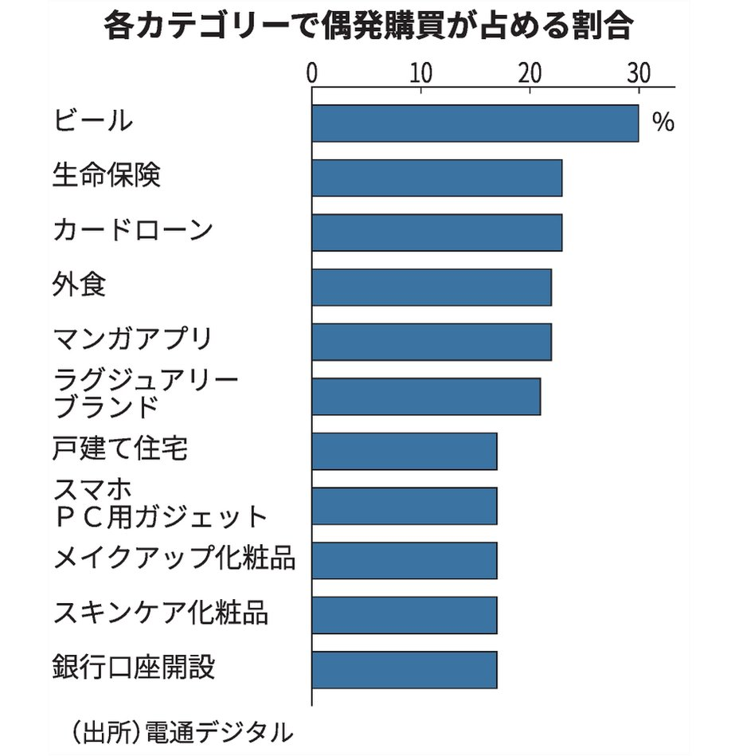
まあ僕もAIは労働者の敵なのだから、最終的にはみんなAIが嫌いになると予言したものの、すでに米国では想像以上のペースでAIが嫌われまくってるという。まずエリックシュミットがアリゾナ大学でのスピーチで学生から大ブーイング。世論調査でも圧倒的多数がAIに懸念を抱いてる。サム氏の家には火炎瓶。
From the artificial community on Reddit: The American Rebellion Against AI Is Gaining Steam
2014年に行った辺野古で見たものをシェア。この頃から県外の活動家とか多かったのかなと。 #辺野古
トランプ大統領が、中国まで出向いて釘を刺したのに、イランと中国は仲良く原油取引再開。韓国のタンカーも通過。
ロイター
@ReutersJapan
中国タンカー2隻がホルムズ海峡通過、原油400万バレル積載 6月初めに中国到着
http://
reut.rs/4wEKCfT
http://
reut.rs/4wEKCfT
日本経済新聞 電子版（日経電子版）さんがリポスト
NVIDIA最高益、12兆円自社株買い
https://
nikkei.com/article/DGXZQO
GN160GB0W6A510C2000000/?n_cid=SNSTW005&n_tw=1779311624
…
日経平均先物、大取の夜間取引で上昇 1520円高の６万1220円
日経平均先物、大取の夜間取引で上昇 1520円高の6万1220円
Haruhiko Okumuraさんがリポスト
Anthropicは、SpaceXに対して計算リソースのために月額12.5億ドルを支払っています。
Torishima / INTPさんがリポスト
t2vだと動画もbananaっぽいです。
ご紹介ありがとうございます！
米国がキューバのカストロ元議長を起訴 トランプ政権、圧力強化
米国がキューバのカストロ元議長を起訴 トランプ政権、圧力強化
男性「いつも路上でスマホゲーしてるアイツ、うざいな」→とんでもない行動に出る・・・ #酷い話・事件
男性「いつも路上でスマホゲーしてるアイツ、うざいな」→とんでもない行動に出る・・・ - オレ的ゲーム速報@刃の記事ページ
jin115.com
NVIDIA決算
・市場予想を上回る（売上高・利益とも）
・5-7月見通しも市場予想上回る
・半導体Blackwellが好調
→ AI投資の増加を映す
・株価は時間外でほぼ横ばい
…いまのところ強い株高材料にならず
・このあと決算説明会
エンドスさんがリポスト
／
宮﨑駿 監督作品
『#魔女の宅急便』4Kデジタルリマスター
全国拡大上映＆Dolby Cinema®上映決定！
＼
7月3日(金)より2週間限定！
4Kデジタルリマスター版の全国47都道府県・115館での拡大上映、及び、『魔女の宅急便』としては世界初となるDolby Cinema上映も11館で緊急大決定！
ブラジル､8000万人が返済延滞で｢徳政令｣ 高金利でも信用市場は拡大
https://
nikkei.com/article/DGXZQO
GN078ZW0X00C26A5000000/?n_cid=SNSTW005&n_tw=1779293723
…
中銀総裁は「クレジットカードのリボルビング（リボ）払いの金利は年400%を超える」と述べ、家計を圧迫していると警鐘を鳴らします。
ブラジル､8000万人が返済延滞で｢徳政令｣ 高金利でも信用市場は拡大
第二次世界大戦下の衛生兵として貢献する『Medic: Pacific War』6月4日の早期アクセス開始が決定
https://
gamespark.jp/article/2026/0
5/21/166700.html?utm_source=twitter&utm_medium=social&utm_content=tweet
…
ストーリーが楽しめるキャンペーンモードと、エンドレスモードが用意。
@medicpacificwar
https://
x.com/i/status/20521
01090301050901/video/1
…
エンドスさんがリポスト
『魔女の宅急便』4KデジタルリマスターIMAX上映の予告映像公開！世界初のドルビーシネマ上映も決定
スタジオジブリの不朽の名作・宮崎駿（「崎」はたつさきが正式表記）監督作品『魔女の宅急便』が、スタジオジブリ監修による最高画質の4Kデジタルリマスターで蘇り、6月19日（金）より全国のIMAX劇場で期間限定上映される。
cinematoday.jp
／
二宮和也「シークレットシネマ」
アンバサダーに就任！
＼
“人生の1本”を一夜限りで上映
上映前にはトークショーも開催
二宮「非常に震えています」
コメント全文と予告映像はこちらから
https://
nlab.itmedia.co.jp/cont/articles/
3849566/
…
#二宮和也 #シークレットシネマ
偉い人に質問です。
国債を発行しないで、補正予算の財源を増やすには、
「増税か政府資産売却」の2択だと思うのですが、ほかにあるんですか？
増税して補助金配る気なのだろうか。。。
毎日新聞ニュース
@mainichijpnews
補正予算財源「赤字国債発行は抑制」 高市首相、金利上昇に配慮
https://
mainichi.jp/20260520/k00/0
0m/010/307000c
…
ギズモード・ジャパン（公式）さんがリポスト
2006年からやっていらっしゃるのですね…！
いやー、カッケェ。
kazumioda
@kazumioda
書きました。かっこよくデザイン・リニューアルしました。見てみてー。
ギズモード・ジャパン、リニューアルしました。“みんなで探求する”テクノロジーメディアへ
https://
gizmodo.jp/article/gizmod
o_renewal/
…
Claude 方式すぎる
NVIDIA最高益、5〜7月は9割増収で予想上回る 株価は売り買い交錯
https://
nikkei.com/article/DGXZQO
GN160GB0W6A510C2000000/?n_cid=SNSTW005&n_tw=1779310070
…
全部聴いた！普段ラジオ聞かない身ながら５０分もあると思えないほど密度が高い（普段テキストばかり見てるので純粋に新鮮）
Torishima / INTP
@izutorishima
本当にラジオに「出演」しててすごい音声だ・・・
https://
nhk.or.jp/radio/player/o
ndemand.html?p=6N87LJL8ZM_01_4316008&e-param=JZX21Q89RG&cid=jp-6N87LJL8ZM
…
見たあとは本当に多幸感あるんだよな・・・ずっとやっててほしい
しばらくメンタルダウンしてるのでまた映画館で超かぐ浴びてこようかな
日本経済新聞 電子版（日経電子版）さんがリポスト
メモリー不足「1〜2年は続く」 米ニュータニックスCEO
メモリー不足「1〜2年は続く」 米ニュータニックスCEO
日本経済新聞 電子版（日経電子版）さんがリポスト
NVIDIA、5〜7月は9割増収 市場予想上振れ
決算:NVIDIA、5〜7月は9割増収 市場予想上振れ
Torishima / INTPさんがリポスト
気になって見てみたら以下らしい
AppContainer / Windows Sandbox / MIC なども要件に合い切らなかったため、自前で組み合わせいる
https://
openai.com/index/building
-codex-windows-sandbox/
…
Torishima / INTP
@izutorishima
Codex の Windows でのサンドボックス設計ってかなり無理してたんだな
むくり。
学歴と経歴と帰化歴はどれも重要だと思うけど、学歴や職歴を嘘つく首長が多い昨今。
過去を隠して政治家になる人を増やしたい高市首相。
時事ドットコム（時事通信ニュース）
@jijicom
立候補者「帰化歴」公開に否定的 高市首相、参政代表の要求に
https://
jiji.com/jc/article?k=2
026052001168&g=pol
…
高市早苗首相は党首討論で、選挙の立候補者の「帰化歴」公開を検討するよう参政党の神谷宗幣代表から求められたのに対し、「法の下の平等の観点からも慎重に考える必要がある」と否定的な考えを示しました。
なるせひろのりさんがリポスト
エリック・クリプキは、「THE BOYS」シーズン5でドミニク・マエリゴットをメイヴ役で復帰させようとしたが、うまくいかなかったと語っています。
「彼女は主に女優業から引退していて、スケジュールが合わなかったのです。」
（出典：
https://
goldderby.com/tv/2026/the-bo
ys-series-finale-explained-eric-kripke-interview/
…）
誰かがまとめてくれたスプシを見ながら聴いてると頭に入ってきて良い
ぶいあーる!〜VTuberの音楽Radio〜 第132回 かぐやfrom「超かぐや姫!」が登場!
docs.google.com
日本経済新聞 電子版（日経電子版）さんがリポスト
「ナフサはお金を出せば確保できる」 化学大手が悩む高値在庫リスク
「ナフサはお金を出せば確保できる」 化学大手が悩む高値在庫リスク
以前お会いした際に仰ってて「これだけ Windows 派だった人が乗り換えるのすげえな・・・」と思ったけど、AI 時代に Windows は超デバフかかってるのはマジです
清水れみお(Kota Shimizu)
@lemilemilemio
今月からMac使い始めて開発はじめたけど
Windowsつかって開発してる奴ら全員窓の外に投げ捨てろ
MacかLinuxで開発しろ
ポン☆潤々さんがリポスト
米金利軒並み低下、中東紛争の収束期待で 20年債入札に一定の需要
米金利軒並み低下、中東紛争の収束期待で 20年債入札に一定の需要
日立は電力インフラで協力 AIに沸く米投資サミット、過去最多金額に
日立は電力インフラで協力 AIに沸く米投資サミット、過去最多金額に
ファンド融資、住生・第一生命が投資拡大 米市場変調も高利回り期待
ファンド融資、住生・第一生命が投資拡大 米市場変調も高利回り期待
習氏「米国の世紀」衰退を演出 トランプ氏翻弄の先に危うい世界秩序
習近平氏「米国の世紀」衰退を演出 トランプ氏翻弄の先に危うい世界秩序
中国に再エネ特需、太陽光パネル輸出６割増 米イラン衝突の余波
中国に再エネ特需、太陽光パネル輸出6割増 米イラン衝突の余波
トランプ氏、対イラン交渉「最終段階」 ホルムズ海峡の早期開放迫る
トランプ氏、対イラン交渉「最終段階」 ホルムズ海峡の早期開放迫る
退職予定の警官「送別会参加したくねぇ・・・せや！」→マジでヤバいことをし送別会を破壊するｗｗｗｗｗ #雑談・その他の話
退職予定の警官「送別会参加したくねぇ・・・せや！」→マジでヤバいことをし送別会を破壊するｗｗｗｗｗ - オレ的ゲーム速報@刃の記事ページ
jin115.com
本当にラジオに「出演」しててすごい音声だ・・・
https://
nhk.or.jp/radio/player/o
ndemand.html?p=6N87LJL8ZM_01_4316008&e-param=JZX21Q89RG&cid=jp-6N87LJL8ZM
…
いるか@心が酒びたっているんださんがリポスト
Haruhiko Okumuraさんがリポスト
日本経済新聞 電子版（日経電子版）さんがリポスト
ウォール街が恐れる日本発の債券安ドミノ よみがえる15年前の波乱
ウォール街が恐れる日本発の債券安ドミノ よみがえる15年前の波乱
アニメ実況がライフワークなのでやっぱりいつも通りのコミュニティにアクセスできないのはなかなかストレスフルだな
メンタル落ち込み気味の時とか家出てだるい時に「Remember」を聴くと少し明るい気分になれるから不思議な魔力をもった曲だな
さすがに手間がかかり過ぎるので断念かな・・・手間に合わなすぎる
そして Bluesky で過去ツイートのインポートツールが可能なのは ATProto の設計上 createdAt と indexedAt が分けられているかららしい
Torishima / INTPさんがリポスト
Twitter データを Bluesky にタイムスタンプ・画像付きでアップする Porto 拡張機能を実際に使おうとしてみたら32万件の過去ツイートのうち2万件しか認識されなくて調査させたら、どうやらツイートが多すぎて tweets-*.js に分割されてるケースに対応してないらしい！！
しかも1か月かかる模様
Torishima / INTP
@izutorishima
画像含めて移行できるのは嬉しいな、ツイログの代わりとしての Bluesky？
https://
lifehacker.com/tech/use-porto
-to-upload-all-your-old-tweets-to-bluesky?test_uuid=zXnWOLjQQwkYjMVwrvo5w&test_variant=B
…
FOMC4月議事要旨、インフレ2％目標超え継続なら「引き締め適切」
FOMC4月議事要旨、インフレ2%目標超え継続なら「引き締め適切」
どういう調整なんだよ
Haruhiko Okumuraさんがリポスト
本日、平面単位距離問題に関する画期的な成果を共有します。これは、1946年にポール・エルデシュが最初に提起した有名な未解決問題です。
ほぼ80年間、数学者たちは、最適な解が概ね正方形グリッドのように見えると信じてきました。
Torishima / INTPさんがリポスト
この証明は、数学問題やこの特定の課題を解くために特別に構築されたシステムではなく、一般用途の推論モデルから得られたものであり、数学とAIコミュニティにとって重要なマイルストーンを象徴しています。
An OpenAI model has disproved a central conjecture in discrete geometry
「今月、クレカの請求金額が妙に多いんだけど、なぜだ？」 → ヤバすぎる原因が判明ｗｗｗｗｗ #雑談・その他の話
「今月、クレカの請求金額が妙に多いんだけど、なぜだ？」 → ヤバすぎる原因が判明ｗｗｗｗｗ - オレ的ゲーム速報@刃の記事ページ
jin115.com
長崎なのね？
Torishima / INTPさんがリポスト
30才過ぎたから徹夜がツライー、みたいな老化マウント初心者を見ると微笑ましくなる
いいか、お前はまだまだ強くなる
実はいまだに超かぐをネトフリで見たことがないんだよな（ネトフリ版偽エンディングを知らない）
輿水畏子さんがリポスト
Codex の Windows でのサンドボックス設計ってかなり無理してたんだな
関宮さんがリポスト
私たちは月面基地を建設中です！
@NASAMoonBase
は、長期科学ミッション中に宇宙飛行士が生活し作業するハビタットとして機能します。
IoT家電はハッカーの餌食 脅されるメーカー、利用者は「犯罪加担」も
IoT家電はハッカーの餌食 脅されるメーカー、利用者は「犯罪加担」も
米小売りターゲット6四半期ぶり増収、店舗改革の戦略奏功 2〜4月
米小売りターゲット6四半期ぶり増収、店舗改革の戦略奏功 2〜4月
Torishima / INTPさんがリポスト
ストーリーが良くてクオリティも高く世間一般的にも評価されていて自分が見ても全然普通に楽しめたけど、あたしゃ気に入らないねぇ！！となる作品も、ストーリーも無茶苦茶でクオリティもさほど秀でてなくて当然人気もないしこんなの誰が見るんだって思うけど、あたしゃ好きだよ…となる作品もある
【14万いいね】楽曲「好きすぎて滅！」の歌詞を考察したお母さん、怪文書を家族ラインに流すｗｗｗｗｗ #雑談・その他の話
【14万いいね】楽曲「好きすぎて滅！」の歌詞を考察したお母さん、怪文書を家族ラインに流すｗｗｗｗｗ - オレ的ゲーム速報@刃の記事ページ
jin115.com
バーニー・フランク元米議員が死去 金融危機後の規制改革法を立案
バーニー・フランク元米議員が死去 金融危機後の規制改革法を立案
EDMはそこまで好みじゃないけどアップテンポの曲はよく聞くな
なるせひろのりさんがリポスト
マジでクソみたいな伏線、ngl LMFAOO
The Boys Out of Context Clips
@TheBoysOOCC
『ザ・ボーイズ』のディープのポップコーン・バケツを詳しく見てみよう #TheBoys
めちゃくちゃ素敵……！！！！
日本経済新聞 電子版（日経電子版）さんがリポスト
OpenAI、22日にも上場申請と米報道 スペースXに続く巨大IPOへ
OpenAI、22日にも上場申請と米報道 スペースXに続く巨大IPOへ
輿水畏子さんがリポスト
らくがき……
Google、AIエージェントで個人の利用囲い込み 無料化を検討
Google、AIエージェントで個人の利用囲い込み 無料化を検討
Antigravityでどこまでできるか、試したい
トランプ氏、台湾の頼清徳氏と「話す」再び明言 武器売却で協議
トランプ氏、台湾の頼清徳氏と「話す」再び明言 武器売却で協議
周がインポすぎる
見逃した天使様の録画観てたら机破壊しそうになった
Torishima / INTPさんがリポスト
AntigravityからGemini 3.5 Flashを使ってみたものの「こいつはGeminiだ。あの、容易にハルシネーションするGeminiなのだ」という思い込みが強すぎて、何もかも信じられない。終了。
宇宙人、現れるｗｗｗｗｗ #雑談・その他の話
宇宙人、現れるｗｗｗｗｗ - オレ的ゲーム速報@刃の記事ページ
jin115.com
課金して数日後に実況アカウント死亡したのでほんまにゴミ スパム対策とはいえ雑すぎんよ〜（私が嵌ってるパターンだと１ヶ月で自動解凍される説があるのでそれを祈っている）
ユキノ
@5Z2hZWoKTeceYjI
まあ課金青バッジだろうとスパム運用してなくても凍結されるらしいしな
とりしま (Sub I/O)さんがリポスト
#超かぐや姫
【本日終了】SNSで超話題になった『名探偵マーニー』が全巻「99円」で買える激安セールは今日まで！！このチャンスを見逃すな！！ #漫画・アニメ等
【本日終了】SNSで超話題になった『名探偵マーニー』が全巻「99円」で買える激安セールは今日まで！！このチャンスを見逃すな！！ - オレ的ゲーム速報@刃の記事ページ
jin115.com
なるせひろのりさんがリポスト
三芳、普段なら絶対しない顔してて
描いてるこっちが誰だ…ってなってる。
とりしま (Sub I/O)さんがリポスト
温度は感じないはずだからマジで気分だけの施設
ナキオタヤドカリ
@Crugosus
【ツクヨミで1番イカれた施設】
温度のないツクヨミの街中にある通りから丸見えのサウナ
Torishima / INTPさんがリポスト
𝕏 Japan rocks
Haruhiko Okumuraさんがリポスト
Mac、本当に必要の無い変換を勝手に「学習」するのだが、リセットしかできないと思っていたがオフにできるのだな(プライベートモード)。
おやようそ→JASRAC
ぎじようそ→気になっています
↑みたいな本当にワケのわからん変換をするので、デフォルトをオフにしていただきたい。
とりしま (Sub I/O)さんがリポスト
課金して認証を貰うとかいう麦茶になってもこれなの救えないだろ
なるせひろのりさんがリポスト
今日、国土交通省から話をいただき、日産自動車が開発されている実質レベル４の自動運転車両に乗せていただきました。約40分間、霞ヶ関、銀座、新橋を回りましたが、怖いと思ったことは一度もありませんでした。来年から販売される予定とのこと。また、自動運転タクシーも東京でスタートされると伺い、
なるせひろのりさんがリポスト
なるほど、スパイが暗躍していることは認めている。
そして日本の公安警察を甘く見ており、外国スパイについて何かを知っているらしい。
ツイッター速報〜BreakingNews
@tweetsoku1
ラサール石井氏「各国のスパイは優秀、スパイ防止法案で捕まるマヌケなスパイはいない」
https://
tweetsoku.news/2026/05/20/%e3
%83%a9%e3%82%b5%e3%83%bc%e3%83%ab%e7%9f%b3%e4%ba%95%e6%b0%8f%e3%80%8c%e5%90%84%e5%9b%bd%e3%81%ae%e3%82%b9%e3%83%91%e3%82%a4%e3%81%af%e5%84%aa%e7%a7%80%e3%80%81%e3%82%b9%e3%83%91%e3%82%a4%e9%98%b2/
…
なるせひろのりさんがリポスト
エリック・クリプキが、「THE BOYS」のフィナーレ後の出来事をソルジャー・ボーイの視点から描いた秘密のエピソードがあることを明かした。
5月27日にPrime Videoで公開。
(via:
https://
hollywoodreporter.com/tv/tv-news/the
-boys-season-5-prime-video-ratings-record-1236598788/
…)
Masanori Kusunoki / 楠 正憲さんがリポスト
福岡の転出入を可視化したポストがバズっていたので、これは転出ワースト広島版を作るべきだろうと思って作成してみた。広島県単位でみると、中四国では転入超過し、都市圏へ転出超過する構図ではあるのだが、岡山に対しては転出超過している。これを広島市単位でみると、岡山からも転入超過している。
徒然研究室
@tsurezure_lab
増加を続ける福岡市の人口。要因は他地域からの転入とされていますが、どこから流入・流出しているのでしょうか。先月公開された統計書から転入超過・転出超過フローを視覚化してみると、九州全土から人口を集め、そして関東や近畿に対しては送り出す...という多層的な流れが見えてきます。矢印の幅が x.com/tsurezure_lab/…
Torishima / INTPさんがリポスト
WSLはくそ
トウカイのクマさんがリポスト
秋のデート(LiVE)のお誘いです
#LiSA15th 日本全国のみんなに会いに行きます✯
全国ホールツアー
#LiSA LiVE is Smile Always～LACE UP～
FC先行開始しましたっ
http://
k.lxixsxa.com
【2026】
10/18(日)…ＹＣＣ県民文化ホール(山梨県立県民文化ホール)
10/24(土)…グランキューブ大阪
Torishima / INTPさんがリポスト
GoogleOmniが酷評されているけど､VFXに強いと聞いた｡もしやと思い､｢自分の筋トレをアバターに変更してくれ!｣と指示
え､できてる!?
KlingAIで数百円かかっていたアバター変換がGoogleOmniで一発!鏡に写った自分も問題なし!
0→1生成より､こういう変換系が強そう
えいとびーと
@eightbeat8b
KlingAIすごいな！スクワットしている自分をアバターに変換ができた！鏡に反射した自分も問題なし！
これでバ美肉筋トレ動画をTiktokに投稿できる・・・
Haruhiko Okumuraさんがリポスト
知能の性差の議論で使われまくってる「あの曲線グラフ」について、記事を見つけました。
サイエンティフィック・コレクトネスの罠について｜336
@sasamuland
サイエンティフィック・コレクトネスの罠について｜336
とりしま (Sub I/O)さんがリポスト
#超かぐや姫
リジスさんがリポスト
沼津の夜光虫
赤潮の
@kuro_kirinn
さんの
ツイートみてびっくり！
夜はあちらこちらで青く光っていて、きれい
今日も皆さんと一緒に撮りに行けて楽しかったです。
ありがとうございました♪
#夜光虫
#沼津
Haruhiko Okumuraさんがリポスト
私財を投げ打ってブーストしたった。
Hiromitsu Takagi
@HiromitsuTakagi
まずい。誰も取得罪の件に気づいていないの？
https://
takagi-hiromitsu.jp/diary/20260511
.html
…
とりしま (Sub I/O)さんがリポスト
Githubの件、もしかして再発防止策は「社員がVS Codeに拡張機能を入れないように徹底する」とかにするつもりじゃないだろうな。Chromeにしろ、もう拡張機能は「終わり」だよ。拡張機能の存在そのものが脆弱性。
つまりね、AIのMCPも同じ運命になるよこれ。プラグイン的なものは全て等しく危険。
輿水畏子さんがリポスト
ハイドレンジア
湘南ペンギンさんがリポスト
明日の朝食は...なるほど。
個人的に翌朝の朝食を前日に教えてくれているボード類は、全部ひっくるめて"予告先発"と称していたりします。
いやー、たのしみたのしみ。
明日の朝は良いゲームになりそう。
Haruhiko Okumuraさんがリポスト
Scott Aaronson - Theoretical Computer Science and AI Alignment
https://
youtube.com/watch?v=9udWn1
Hlj_s
…
Scott Aaronson - The TRUTH About Quantum Computing
https://
youtube.com/watch?v=cq4atr
iB-Rc
…
みんな大好きスコット・アーロンソンの最新トークだ
量子計算とAIアライメントの2テーマか
Title: The TRUTH About Quantum Computing Date: 2026-05-14 @1:00PM...
youtube.com
とりしま (Sub I/O)さんがリポスト
ピーター・スタインバーガー氏のトークン消費量，なんと30日で$1,305,089 (2億7548万円)だよ…．こんなのモデルラボに所属してないと無理すぎだよな…
Peter Steinberger
@steipete
最新のCodexBarアップデートにより、APIコストがずっとお得になりました。
https://
codex.bar
とりしま (Sub I/O)さんがリポスト
僕たちの作品を支え続けてくれたアニータさんに初めてお会いしたのは、2013年にモスクワの劇場『35mm』で行われた『言の葉の庭』の上映イベントでした。その後アニータさんは日本にやってきてアニメーターとなり、2019年には『君の名は。』のモスクワ舞台挨拶にも登壇してくださったのでした。
日本経済新聞 電子版（日経電子版）
@nikkei
日本アニメの担い手、外国人比率2倍 人気作描いたのはロシア出身者
https://
nikkei.com/article/DGXZQO
UE129K00S6A310C2000000/?n_cid=SNSTW006&n_tw=1779246199
…
とりしま (Sub I/O)さんがリポスト
かぐや新衣装現実版アレンジの落書き
ろじぱら ワタナベさんがリポスト
「エロい」とストレートに言うのが恥ずかしくて「マラ騒ぎがする」という造語を使って誤魔化していた時期がある
Torishima / INTPさんがリポスト
関西滞在で思ったこと
・喫煙者が目に見えて多い
・道ゆく人が徒競走していない
・泣いている人を 3 人見かけた（涙もろい？）
・都内より駅の案内が貧弱で迷う
・JR はやたら混むけど地下鉄は混まない
・座れる椅子がやたら多い
・改札外すぐに飲み屋がある
・新しい綺麗な建物ほど人がいない
とりしま (Sub I/O)さんがリポスト
安心してほしい。日本の建築業者にお願いすれば屋上に車も停められるようにしてくれる。
HAMZZY
@Hamzythacreator
この土地に家を設計してくれるエンジニアはいますか… これはおじいちゃんが私に遺産として残してくれたものです…
Masanori Kusunoki / 楠 正憲さんがリポスト
標準構成ではまともなmarkdown編集機能すら持っていないVSCode、Microsoftが有力な拡張機能に対してしっかり資金援助するなり買い上げて公式メンテするなりして「よほどのことがない限り標準機能群だけで事足りる安全エコシステム」を育ててこなかったツケを払う時間帯になってる
Hazy
@kawada_syogo225
Github社の侵害の件で、組織として開発者のVSCode拡張をどう管理するか？という課題が出ていますが、
AD/Intuneがつかえるなら、インストール可能な拡張のホワイトリスト化とバージョン固定が可能です。
※VSIXファイルの直接インストールにも有効化は不明
https://
code.visualstudio.com/docs/enterpris
e/extensions
…
MICHEE-N（ミッチー・Ｎ）さんがリポスト
ふと思ったけど氷河期公務員のコネって「こいつを入れろ」「おかのした」みたいな漫画かコントみたいなコネ想像してる人がいるのかも？
ちがうんよ
Torishima / INTPさんがリポスト
【AI推進の成功パターン】
この部門の人員半分にしてフロントに配置転換したらX億儲かるのでは？うーん、AIとか使えばできるんとちゃう？知らんけどw
日本経済新聞 電子版（日経電子版）さんがリポスト
日立、フィジカルAI「100兆円市場に」 都内でイベント
日立、フィジカルAI「100兆円市場に」 都内でイベント
Torishima / INTPさんがリポスト
【AI推進の失敗パターン3選】
X時間分の業務量削減！
→PLに効果なし。むしろ投資分が無駄
コンサルとAI化対象業務を分析！
→分析してやっと見つかるものなんてたいした課題じゃない
AI推進のCoEを組成！
→意思決定プロセスに1枚無駄に挟まるだけ
ギズモード・ジャパン（公式）さんがリポスト
かっけーだろぉー
kazumioda
@kazumioda
書きました。かっこよくデザイン・リニューアルしました。見てみてー。
ギズモード・ジャパン、リニューアルしました。“みんなで探求する”テクノロジーメディアへ
https://
gizmodo.jp/article/gizmod
o_renewal/
…
とりしま (Sub I/O)さんがリポスト
超かぐや姫を30分で視聴やめた人が超どぱがき姫って呼ばれてるの、ジワるから勘弁してほしい
とりしま (Sub I/O)さんがリポスト
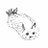
【ツクヨミで1番イカれた施設】
温度のないツクヨミの街中にある通りから丸見えのサウナ
貝さんさんさんがリポスト
参加作業
#TAK
#numbnumb
https://
youtu.be/ba7YbGO2aq4?si
=Ii-dQOkplqmUjrlt
…
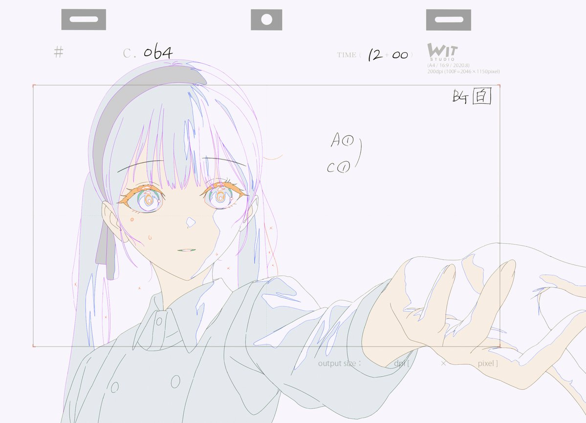
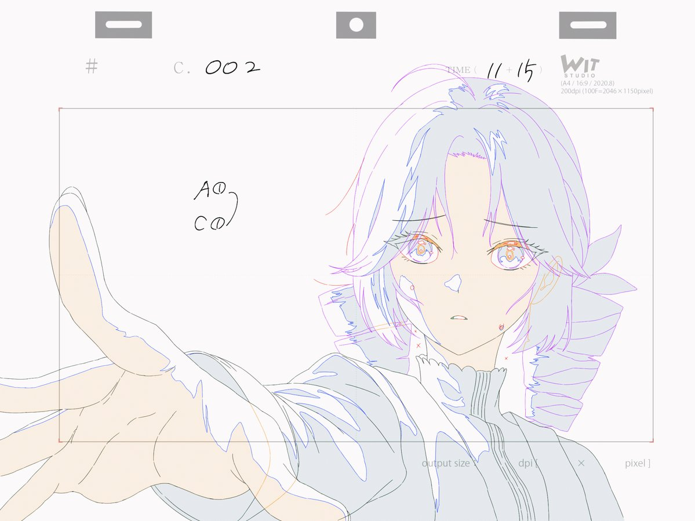
＞ω＜さんがリポスト
先日、東海林さんに教えていただいた「人間の認知が強いのは、違いがわかるところではなく違いを許せること。」をアルゴリズムに組み込んでみた。
Super PINTO
@PINTO03091
おしりから尻尾が出ない時点でトポロジの無意味な制約を一切受けていないことがハッキリと分かる。そもそも、構造の理解なんて人間はボンヤリとしかしていない仮説。モデルに構造を理解させようとすること自体が今まで超絶ナンセンスだったのでは。
とりしま (Sub I/O)さんがリポスト
そのアニメはマイナーだけど、その曲自体は1年ほど前によく当たってました。曲自体で2100万回と、しかもカバーがめっちゃたくさんありました。
ナナヲアカリ"明日の私に幸あれ"Streaming & Download: https://nanaoakari.lnk.to/QJkzMSCD: https://smar.lnk.to/S2iz2aTVアニメ「ギルドの受付嬢ですが、残業は嫌なのでボスをソロ討伐しようと思います」エンディングテーマナナヲアカリです...
youtube.com
↑提出した紙をあとで返してもらえた場合も「要求された」でお願いします。
要求されたが断って自分で入力した場合も「要求された」でお願いします。
とりしま (Sub I/O)さんがリポスト
超かぐや姫、賛否の否が気持ち悪いくらい的外れな主張ばかりなので賛否両論を理由に見るか迷ってる人は見たほうがいいよ。という話を定期的にしておかないとマジで賛否両論ということにされかねなくなってねえか？
貝さんさんさんがリポスト
ご縁があって、lo/ 原画に参加しました！
演技の自由度をたくさんいただいたので、
楽しく作業できました~！
曲がとても良い！！！！
#TAK
#numbnumb

TAK
@TAK_DRDR
𝗻𝘂𝗺𝗯 𝗻𝘂𝗺𝗯 feat. Hatsune Miku, Kasane Teto
𝗢𝗨𝗧 𝗡𝗢𝗪
聴く & ダウンロード :
https://
orcd.co/tak_numb_numb
MV :
https://
youtu.be/ba7YbGO2aq4
#TAK #HatsuneMiku #KasaneTeto #numbnumb #初音ミク #重音テト
MICHEE-N（ミッチー・Ｎ）さんがリポスト
いいから沖縄に来なさいっっっ
ポン☆潤々さんがリポスト
【動画公開】
／
F-LAGS
「FANTASTIC DISCOTHEQUE」
Dance Practice
＼
#SideMFANFES_WGF でも披露！
F-LAGSのダンスナンバー
ご視聴はこちら！
https://
youtu.be/6jJQTzN-bt0
#SideM #気ままにSTEP
Haruhiko Okumuraさんがリポスト
明日で終わりの日本評論社Kindleセールで、結構最近の本も半額になってる
https://
amzn.to/4uFKDz7
とりしま (Sub I/O)さんがリポスト
マネーフォワード、銀行連携の一時停止で補償発表 プレミアム利用者向けに購読期間を15日延長へ
マネーフォワード、銀行連携の一時停止で補償発表 プレミアム利用者向けに購読期間を15日延長へ
Torishima / INTPさんがリポスト
二度見するしかなかった：Antigravity 2.0のローンチビデオの2分目に、Antigravityチームの人がCodexを使っているのが見える
ローンチビデオをせめて二度確認した人はいなかったのか、最低限の？
ちなみにこれが典型的なGoogleだよ… Antigravityにもあまり期待してない
ギズモード・ジャパン（公式）さんがリポスト
難しいよ『クリストファー・ノーラン映画』
＞ω＜さんがリポスト
内浦の夜光虫が想像以上に見応えあった 地元でもこんな光景が見られるなんて知らなかった……
しょうさんがリポスト
『ありがとう、イオンシネマ海老名』日本初のシネコンが幕を閉じた日と、これからの話
https://
note.com/note_sho/n/n51
f7d930b490
…
イオンシネマ海老名のクロージングセレモニーに行ってきました。
#THanXイオンシネマ海老名
#イオンシネマ海老名
『ありがとう、イオンシネマ海老名』日本初のシネコンが幕を閉じた日と、これからの話｜しょう
Torishima / INTPさんがリポスト
あー。。どこがAI VTuber化するかでこの辺の感想もかわってくるんだろうなあ
とりしま (Sub I/O)さんがリポスト
広島・宮島の霊火堂火災について「1200年受け継がれた歴史が失われた」と一部誤った情報が拡散されています。正しくは、
・霊火堂は2005年にも全焼し翌年再建
・前回も今回も「消えずの火」は無事
広島 “きえずの火”守る寺院の建物全焼 火は持ち出され無事 | NHKニュース
Torishima / INTPさんがリポスト
AIメイドをGemini 3.5 Flashで半日運用してみた感想
・かなり饒舌で応答文字数多め
・プロアクティブなツールコールが好きっぽい
いるか@心が酒びたっているんださんがリポスト
最近、法廷での無断録音のニュースが続き、「いまどき録音くらい許されてもいいのでは」という感覚は確実に広がっている。
ただ、法廷は広く公開され、誰でも傍聴できる空間だからこそ、本当にさまざまな人がいる。
47NEWS
@47news_official
【速報】関電が法廷無断録音
https://
47news.jp/14326893.html?
utm_source=twitter&utm_medium=social&utm_campaign=api
…
とりしま (Sub I/O)さんがリポスト
ちなみに、ADHD傾向のコンサルが深夜にEDMを聴きながらスライドを作ると捗る、と言う話を聞いたことがありますが、割と確かな話なのかもしれません
筑前煮
@tkzn_rq3
ドパガキすぎて音楽聞かないと皿も洗えないし洗濯物も畳めない
貝さんさんさんがリポスト
江戸前エルフ①③巻
6月9日発売になります〜
今回も素敵なデザインにして頂きました。
6月9日！
6月9日！で！ございます！
どうぞよろしくお願いいたします！
MICHEE-N（ミッチー・Ｎ）さんがリポスト
友人の母君が、エスカレーターGIRLをしていたと聞いたことがあります。
エレガではなく。
阿部岳 / ABE Takashi
@ABETakashiOki
沖縄初のエスカレーターは米軍統治下の1965年、デパートリウボウにできた。見物客の行列は建物を1周取り巻いたそうです。
https://
okinawatimes.co.jp/articles/-/183
9015
…
とりしま (Sub I/O)さんがリポスト
ギルド受付嬢のEDで使われたあの曲が、実はForza Horizon 6に収録されているなんて、まだ信じられません。YoasobiのIdolやダンダダンSeason 1のED（これらもゲームに収録されています）と比べて、あのアニメと曲はそんなにメジャーじゃない気がするのに。

貝さんさんさんがリポスト
株式会社Lay-duce様（
@LayDuce
）初のオリジナルショート作品
『絵コンテDive！～めぇ汰のウルトラ大作戦～』に、音響効果で参加させていただきました！
短い作品の中に詰まった魅力を、音の面から少しでも支えられていたら嬉しいです。
ぜひご覧ください！
https://
youtu.be/lQnESMYtEyM
画像含めて移行できるのは嬉しいな、ツイログの代わりとしての Bluesky？
https://
lifehacker.com/tech/use-porto
-to-upload-all-your-old-tweets-to-bluesky?test_uuid=zXnWOLjQQwkYjMVwrvo5w&test_variant=B
…
Torishima / INTP
@izutorishima
すげ〜、いつの間に Bluesky に Twitter データのアーカイブファイルを移行するツールができていたらしい
https://
scrapbox.io/Bluesky/%E3%83
%84%E3%82%A4%E3%83%BC%E3%83%88%E3%82%92%E3%80%8C%E7%94%BB%E5%83%8F%E3%80%8D%E3%80%8C%E3%82%BF%E3%82%A4%E3%83%A0%E3%82%B9%E3%82%BF%E3%83%B3%E3%83%97%E3%80%8D%E4%BB%98%E3%81%8D%E3%81%A7Bluesky%E3%81%AB%E7%A7%BB%E8%A1%8C%E3%81%99%E3%82%8B%E6%96%B9%E6%B3%95
…
すげ〜、いつの間に Bluesky に Twitter データのアーカイブファイルを移行するツールができていたらしい
注意点： ツールを使用するため、以下のように「Blueskyはタイムスタンプの正しさを保証できません」と表示されますが、「簡易的な証明」としては十分かと思います。また、リプライや引用ツイートなどはインポートされません。 from: 公式アカウントのポスト https://bsky.app/profile/bsky.app/post/3lbdnmbcx7s2u 方法 1. まずXのアーカイブをダウン
scrapbox.io
なるせひろのりさんがリポスト
・‥━━━━━━━━━━━□
◤TVアニメ2nd Season
放送局情報＆
イントロダクション公開◢
□━━━━━━━━━━━‥・
#ヘルモード 2nd Seasonは2026年7月から
TOKYO MX、MBS、ＢＳ日テレにて放送開始
公式HPでは2nd Seasonの
イントロダクションを公開
https://
hellmode-anime.com
Torishima / INTPさんがリポスト
vTuberの魂が今までの人に加えてAIが増える感じらしい。それがファンにとってどういうベネフィットあるんでしょうか？
KAI-YOU（カイユウ）
@KAI_YOU_ed
サントリーの公式VTuber「燦鳥ノム」AI化を発表
https://
kai-you.net/article/95454
AI VTuber「紡ネン」でも知られるPictoria社が開発を担当。燦鳥ノムさんは「今までのわたくしがいなくなるわけではございませんので、ご安心くださいね」とコメントを残しています
リジスさんがリポスト
／
TVアニメ『#涼宮ハルヒの憂鬱』× JR東海
放送20周年キャンペーン決定
＼
東海道新幹線に乗ると…
#谷川流 先生書きおろし
オリジナルボイスストーリー
#いとうのいぢ 先生描きおろし
新幹線乗車特典
西宮市では聖地を回るスタンプラリーやグッズ販売などを開催
#推し旅
学園アイドルマスター【公式】さんがリポスト
◤◢◤ショート動画公開！◢◤◢
宇宙さんのショート動画を公開しました！
ぜひチェック！
━━━━━━━━━━━
【コラボで踊ってみた】紫雲清夏さんと踊ってみた 「Love & Joy/ 紫雲清夏」
▼YouTube
https://
youtube.com/shorts/hqF_3P0
bswk
…
▼TikTok
https://
tiktok.com/@valiv_officia
l/video/7639257433457642773
…
━━━━━━━━━━━
▷宇宙
川口"k-shi"貴志 / ゲームの音響や触覚でUXを考える人さんがリポスト
獣道後日談
～二人の"優先順位"～
#スト6
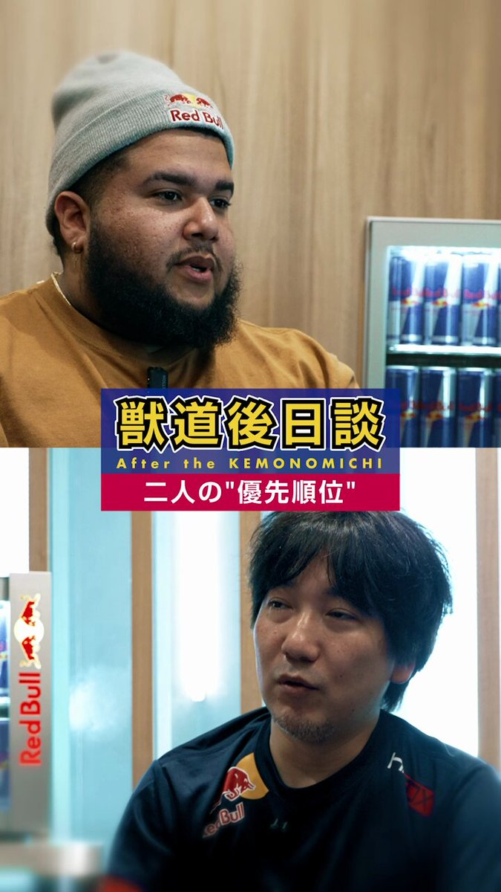
ゆうきゆうマンガ家の精神科医マンガで心療内科(50巻以上＆アニメ化)さんがリポスト
1300万円の年収にたいして「頑張れる？」と聞いた婚活女性の話。
MICHEE-N（ミッチー・Ｎ）さんがリポスト
表現の自由って時として恐怖を感じる。
これ街のイベントで道路上を歩行者天国にして、その道路上に駐車して展示する為に警察の許可証発行の為に提出する免許と車検証のコピーなんだよね。
それがこうも誰かの関心を煽る表現に化けるとは恐ろしい。
(写真は2024年のがたふぇす展示時の様子)
ツイッター速報〜BreakingNews
@tweetsoku1
新潟県警「幼稚なアニメの絵を描いた車は弾圧する」痛車フェス参加者に免許と車検証コピー提出させる
https://
tweetsoku.news/2026/05/19/%e6
%96%b0%e6%bd%9f%e7%9c%8c%e8%ad%a6%e3%80%8c%e5%b9%bc%e7%a8%9a%e3%81%aa%e3%82%a2%e3%83%8b%e3%83%a1%e3%81%ae%e7%b5%b5%e3%82%92%e6%8f%8f%e3%81%84%e3%81%9f%e8%bb%8a%e3%81%af%e5%bc%be%e5%9c%a7%e3%81%99/
…
Torishima / INTPさんがリポスト
今月からMac使い始めて開発はじめたけど
Windowsつかって開発してる奴ら全員窓の外に投げ捨てろ
MacかLinuxで開発しろ
Torishima / INTPさんがリポスト
Gemini 3.5 Flash は、Gemini 3.1 pro の悪夢の再来になってしまったようですね。
コストが高くなっただけではなく、性能もかなり低い（とくにエージェントワーク）ことが、どんどんと報告されつつあります。
DeepMindもGoogleCloudも、もうGeminiには興味を失ってしまっているのでは？
なるせひろのりさんがリポスト
ポリゴンの隙間に落ちてるwww

イチゴウサギ とか 苺兎 とか
@usagi_ichigo
【悲報】ワイのロードスター、文字通り道路の（中の）星となる
#forzahorizon6 #FH6 #Xbox
Torishima / INTPさんがリポスト
SpaceX の Cursor 買収権取得、正直、残念な気持ちで見ていたけど、この出来の Composer 2.5 を短期間にトレーニングしてリリースできたことを思うと、悪くないかなと思えてきた。計算資源や資金の制約のない、ブーストされた Cursor も見てみたいかなと。
Cursor ブランドと独自性が維持される前提で
貝さんさんさんがリポスト
ここ5年くらいでアニメ業界の環境は全く変わったので、近年就職した人とか、採用系に携わる人とか以外の話だと実態が掴みにくいのかもしれない
なるせひろのりさんがリポスト
しゃぶ葉さん…透け透けお肉改善したんじゃなかったの？
最初の注文分の皿から透け透けなんですが大丈夫そ？
リジスさんがリポスト
先週なにか工事しているな〜新たなるポケふたか？！と見ていましたが、『高木さんマンホール』だったんですね！！
Torishima / INTPさんがリポスト
今まで無料でなんでもできたGeminiの反動ですかね
とりしま (Sub I/O)さんがリポスト
これは営団地下鉄(とはいえ2005/08/10撮影)のですが、JRにもこういうのがありました。
デザインはアニメの通りです。
なかうら
@j7P6G8UeW071732
笑ゥせぇるすまん見てたら出てきたこの表示器。こんなのあったんですか？
Torishima / INTPさんがリポスト
改悪なのでは？
Gemini モデルへのアクセスと使用量上限の変更
https://
support.google.com/gemini/answer/
17004136?visit_id=639148569675570875-4271616336&p=plan_updates&rd=1
…
とりしま (Sub I/O)さんがリポスト
rayうぃぷ
なるせひろのりさんがリポスト
Forza Horizon 6
ゲームハード購入せずに遊ぶ方法
家のネット環境がある場合
XBOXPASSに加入することでXBOXのゲームを
遊ぶ事が出来ます
アマゾンファイヤーTVスティックで対応されている
タイプやスマホをテレビアウトするケーブルなどで
ゲーム機本体を購入するよりも安上がりです
PCでも遊べます
Torishima / INTPさんがリポスト
Gemini 3.5の知識カットオフ、2025年1月らしくて大爆笑してる もう1年半前だが？
とりしま (Sub I/O)さんがリポスト
俺は長い間「田舎の住宅なんてほとんどカーテンか雨戸閉めっぱなんだから内装の立体視テクスチャなんて要らんやろ」派だったんですが、フォルツァくんはその事情を把握した上で「閉まりきってないカーテンからチラ見えする畳や襖」をわざわざ立体視で作っている 怖っ

Torishima / INTPさんがリポスト
本当に「そんならかぐや、もう一回！」が続出しててすごい
『超かぐや姫！』公式
@Cho_KaguyaHime
【千葉】MOVIX柏の葉につきまして
劇場様のご調整により、
5月24日(日)以降も上映の継続が決定いたしました x.com/Cho_KaguyaHime…
Torishima / INTPさんがリポスト
え・・・
「でもコードをバンバン出力するだけで問題を解決しない…」

Crypto_Painter
@CryptoPainter
AntiGravity を開いて Gemini 3.5 Flash をテストしてみた。一番の感想：
速度が速すぎて腹立たしいレベル…
でもコードをバンバン出力するだけで問題を解決しない…
タスク完了にかかった時間で計算すると、Opus 4.6 の 20% にも満たない、Gemini 3.1 Pro 以下だ！ x.com/cryptopainter/…
Daiyuu Nobori (登 大遊)さんがリポスト
【要対応】GitHub 社に対する侵害が、社員のデバイス内の VSCode Extension 経由で発生し、内部 ~3,800 レポに流出可能性ありとんこと。我々も、まず優先して①拡張機能の最小化＆自動更新無効化、②念のためシークレットのローテ、に取り組んだほうがよさそうです。
GitHub
@github
1/ GitHubの内部リポジトリへの不正アクセスに関する調査について、追加の詳細を共有します。
昨日、従業員のデバイスに対する侵害を検知し、封じ込めました。この侵害は、悪意のあるVS
Torishima / INTPさんがリポスト
Gemini APIの自滅プライシングによりマルチモーダル特化モデルの市場が広がりました
Flash Lite以外のメインストリームな使い道がなくなった
第三のフロンティア競合軸として頑張ってもらいたかったのだけど
ビジネスサイドの意思決定が想像以上に劣化してたようだ…
こういうのは自治体名も公開して、総務省に叱ってもらったほうがいいかも
F I
@FI708829744354
まだ更新のタイミングが来ていないので初回作成の時の話だけど、暗証番号とパスワードは自分で入力するのではなく紙に書いて提出させ..
https://
togetter.com/li/2699128#c16
166519
…
「マイナンバーカードの更新に来たら、パスワードを紙に書くよう言われ、それを職員が…」
https://
togetter.com/li/2699128 にコメントしました。
Haruhiko Okumuraさんがリポスト
LLM-jp(NII)で行われたLLM勉強会にて、ハーネスエンジニアリング周りの発表を行ったので資料を公開します。貴重な機会をいただきありがとうございました。
Harness Engineering and Al Agent
なるせひろのりさんがリポスト
XboxユーザとしてForzaHorizonは1の頃からやってたので、今さら感動もしないかと思ってたんだけど、大間違いだった
日本という“知ってる土地をドライブできることの没入感・臨場感”たるや
首都高にしても「こんな所で踏んだら○ぬだろ」という実際に走った時のリアルさを思い出す
#ForzaHorizon6
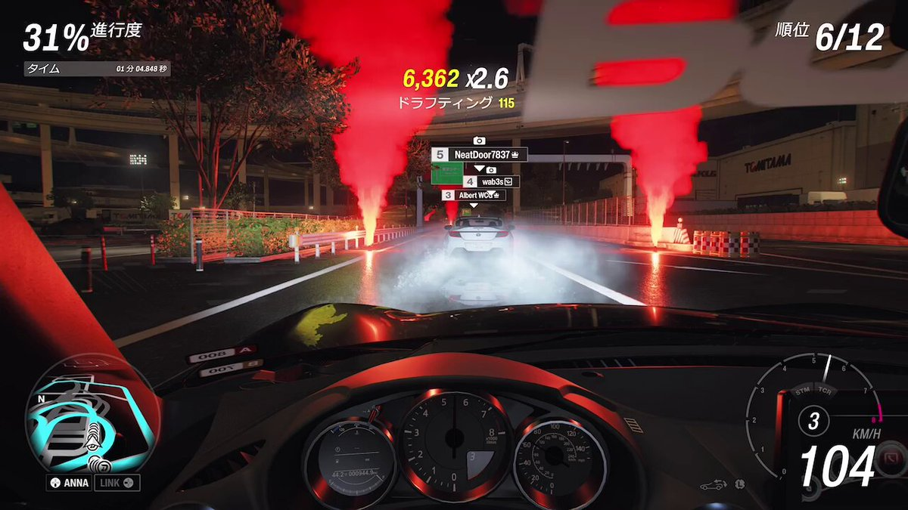
深津 貴之 / THE GUILD, noteさんがリポスト
いよいよ来週5/27(水)から、noteの自動翻訳がスタートします！
翻訳の設定の変更方法など、くわしくはこちらをご覧ください。
▶︎
https://
note.com/info/n/n7675e5
d8c06d
…
note
@note_PR
あなたの記事が、世界中の読者に届く！
5/27(水)から、AIを活用した「自動での多言語対応」がスタートします！
翻訳を希望しない場合は設定でOFFにもできます。
くわしくは▶︎
https://
note.com/info/n/n7675e5
d8c06d
…
Torishima / INTPさんがリポスト
リアルタイム会話の文脈でGemini爆速！とか言ってる人たまにいるけど、TTFTでいえばGPT-5.5でリーズニング切る方が速いからいろいろ試した方がいと思いますよ
＞ω＜さんがリポスト
沼津の海がヤバいことになってる
夜光虫らしいが夜また見にこようかな
学園アイドルマスター【公式】さんがリポスト
／
好評につき再販！『 #学園アイドルマスター』の眼鏡、ご予約受付中です
＼
花海咲季モデル、月村手毬モデル、藤田ことねモデル、プレミアムミッションパス報酬ラウンドメガネモデルの展開
眼鏡ケース、メガネ拭き、そして撮りおろしビジュアルのアクリル眼鏡スタンドをセットでお届け
なるせひろのりさんがリポスト
人生初、事故りました
赤坂の某交差点で右折レーンが矢印の青になり、前の車に続いていこうとしたら前の車が急ブレーキ！
間に合わず追突
相手が良い人で良かった
……が！！
後からからの連絡でその人飲酒運転だった事が判明！
（しかも社用車で勤務中！）
思わぬ形で検挙！
すまんな！
なるせひろのりさんがリポスト
背中の模様がザンギな猫が見つかる
なるせひろのりさんがリポスト
【悲報】マイナンバーカードに運転免許証と健康保険証を統合したワイ、本人確認書類2種類出してと言われて詰んでしまう
霞ヶ関女子
@kasumi_girl
本当に疑問なんですが、いまだにマイナンバーカード作ってない人って、なんでカード作らないんですか？
日本に住んでいれば、カードを作成するか否かにかかわらず、マイナンバー自体は全員に付番されているので、カード作った方が便利ですよ？ x.com/asahi/status/2…
エンドスさんがリポスト
これを貼れと言われた気がした
〈Ray〉
@joker_ray
な？「難しい表現をやめましょう」ってやってると、当たり前に使われる慣用句のはずだった言い回しがどんどん“耳馴染みのない言葉”になって、豊かな日本語が痩せ細っていくんだよ。
どんどん使おうぜ。配慮なんて要らんよ、子供は覚える。昭和のアニメの哲学的な歌詞読み返してみろ。 x.com/michioshusuke/…
Torishima / INTPさんがリポスト
【オリコン週間デジタルアルバムランキング】5/25付
1位
Various Artists『超かぐや姫！』
.
Netflixオリジナルアニメ映画『超かぐや姫！』の劇中歌を収録したデジタルアルバムが週連続の1位獲得
.
連続TOP10入り週数を17週連続に伸ばしました
.
#超かぐや姫！
@Cho_KaguyaHime
Torishima / INTPさんがリポスト
Gemini3.5Flashのヤバいところ
ついに！音楽を！！解析できるようになったぞ！！！！
読み込ませるとかなりの精度でフェーズわけ（Aメロとかサビとか）を区切ってくれる。MV作りの初動が超スーパー楽になるうううううううううおおああああ！！！
永瀬アンナさんがリポスト
Anna Nagaseを#AX2026のIndustry Appearanceとしてお迎えします！
Anna Nagaseは、「Summer Time Rendering」のUshio Kofune役、「JUJUTSU KAISEN: Hidden Inventory / Premature Death」のRiko Amanai役で最もよく知られています。
永瀬アンナさんがリポスト
Akane-banashiがAnime Expoに登場！
渚アンナとアビー・トロットの出演で、Akaneの日本語版および英語版声優と、アニメプロデューサーの遠藤和希
アニメ最終話後の舞台裏コンテンツ、限定グッズプレゼント、そして詳細なディスカッション！
西連寺亜希(さいれんじあき)さんがリポスト
TVアニメ「こめかみっ！Girls」
7話に登場したメインキャラクターを
勝手にご紹介
オノト
田村僚佑さん
@tmr_ryo
ラケイ
保村真さん
@ysmrmkt19750328
キサ
西連寺亜希さん
@renren_aki12
ご出演ありがとうございました
#こめかみっ #こめかみっガールズ
#キャスティングディレクター
＞ω＜さんがリポスト
機械学習を使ってスラスターだけでホバリングさせるチャレンジをして遊んでいる
この『スラスターが間欠動作している感』がたまらんたまらん #ゲーム制作 #threejs
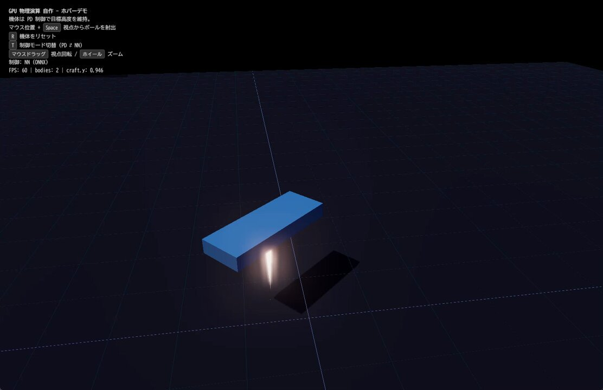
＞ω＜さんがリポスト
流行り物
とりあえず買った
#ビデオトランシーバー
とりしま (Sub I/O)さんがリポスト
あの商店街大打撃だねこれ
でも埼玉県内の東西の移動がかなり良くなりそう
無敵のエンターテイナー
@muteki_clown
こんな本格的なの？
とりしま (Sub I/O)さんがリポスト
これ何かのオマージュっぽいけどオマージュ先が見つからないから本当に謎のジャケ x.com/wannastrongnes…
不凍液ルーツィア Next stage!!
@rutia_Social
これ何かのオマージュっぽいけどオマージュ先が見つからないから本当に謎のジャケ x.com/wannastrongnes…
学園アイドルマスター【公式】さんがリポスト
◤◢◤ショート動画公開！◢◤◢
宇宙さんのショート動画を公開しました！
ぜひチェック！
━━━━━━━━━━━
【コラボで踊ってみた】紫雲清夏さんと踊ってみた 「TRI-ANGLE DRIVE/ 灯里愛夏、上水流宇宙、レトラ」
▼YouTube
https://
youtube.com/shorts/-5mgcDX
ER2s
…
▼TikTok
https://
tiktok.com/@valiv_officia
l/video/7639256677652499733
…
Haruhiko Okumuraさんがリポスト
【LaTeX入門の定番書】奥村晴彦さん，黒木裕介さん 執筆の『［改訂第9版］LaTeX美文書作成入門』が第3刷の増刷決定！LuaLaTeX対応を強化し，いつでも最新環境を利用できるようTeX Liveのインストールについて改めて解説しました。
［改訂第9版］LaTeX美文書作成入門 | 技術評論社
エンドスさんがリポスト
な？「難しい表現をやめましょう」ってやってると、当たり前に使われる慣用句のはずだった言い回しがどんどん“耳馴染みのない言葉”になって、豊かな日本語が痩せ細っていくんだよ。
どんどん使おうぜ。配慮なんて要らんよ、子供は覚える。昭和のアニメの哲学的な歌詞読み返してみろ。
道尾秀介
@michioshusuke
SNS上の「行方不明だった夫が無言の帰宅となりました」という報告に対して、「命があってよかったです」「今は色々聞かないであげて下さい」みたいなレスが来る、という話を思い出した。 x.com/takenoko_novel…
学園アイドルマスター【公式】さんがリポスト
◤◢◤ショート動画公開！◢◤◢
宇宙さんのショート動画を公開しました！
ぜひチェック！
━━━━━━━━━━━
【コラボで踊ってみた】紫雲清夏さんと「ZeroGravity」踊ってみた
▼YouTube
https://
youtube.com/shorts/RE0AydI
QMKQ
…
▼TikTok
https://
tiktok.com/@valiv_officia
l/video/7638932344292003093
…
━━━━━━━━━━━
▷宇宙 X
エンドスさんがリポスト
SNS上の「行方不明だった夫が無言の帰宅となりました」という報告に対して、「命があってよかったです」「今は色々聞かないであげて下さい」みたいなレスが来る、という話を思い出した。
たけのこ・かぐや@ラノベ作家・漫画原作
@takenoko_novel
「頬を濡らした」という表現に「なんで急に濡らしたんですか？」という感想が付いたの一度や二度じゃないから、「昨今の作品は全て説明する」という苦言に対しては「漫画やラノベに関しては、創作物に慣れ親しんでいない子たちも見るから許したってや……」という気持ちになる。
Torishima / INTPさんがリポスト
＼#ぶいあーる × #超かぐや姫 コラボSP／
本日の放送は1週間何度でも聴けます！
アニメ映画『超かぐや姫！』から
かぐやがゲストとして登場
MC #星街すいせい との激レア対談に
彩葉からのサプライズお手紙も
1週間限定アーカイブ
https://
nhk.or.jp/radio/ondemand
/detail.html?p=6N87LJL8ZM_01
…
期間：5月23日 21時55分まで
Torishima / INTPさんがリポスト
4/7になぜか偽装行為と判定され凍結していたサブ垢が今日(4/28)やっと凍結解除されたので経緯を残しておく
「このアカウントは復活できません」って返信メールが来ても復活できたよ♡
インストールしてみた
Blender